Does Localization Inform Editing? Surprising Differences in Causality-Based Localization vs. Knowledge Editing in Language Models
Abstract摘要
Language models learn a great quantity of factual information during pretraining, and recent work localizes this information to specific model weights like mid-layer MLP weights [21]. In this paper, we find that we can change how a fact is stored in a model by editing weights that are in a different location than where existing methods suggest that the fact is stored. This is surprising because we would expect that localizing facts to specific model parameters would tell us where to manipulate knowledge in models, and this assumption has motivated past work on model editing methods. Specifically, we show that localization conclusions from representation denoising (also known as Causal Tracing) do not provide any insight into which model MLP layer would be best to edit in order to override an existing stored fact with a new one. This finding raises questions about how past work relies on Causal Tracing to select which model layers to edit [21, 22]. Next, we consider several variants of the editing problem, including erasing and amplifying facts. For one of our editing problems, editing performance does relate to localization results from representation denoising, but we find that which layer we edit is a far better predictor of performance. Our results suggest, counterintuitively, that better mechanistic understanding of how pretrained language models work may not always translate to insights about how to best change their behavior.
语言模型在预训练期间学习了大量事实信息，近期工作将这些信息定位到特定的模型权重，例如中间层的 MLP 权重 [21]。本文发现，通过编辑与现有方法所指示的事实存储位置不同位置的权重，可以改变事实在模型中的存储方式。这一发现令人意外，因为我们原本预期，将事实定位到特定的模型参数能够告诉我们应在何处操纵模型中的知识，而这一假设也推动了以往关于模型编辑方法的研究。具体而言，我们表明，表征去噪（亦称因果追踪）所得的定位结论无法为如下问题提供任何启示：为了用新事实覆盖已存储的现有事实，编辑模型中的哪个 MLP 层最为合适。这一发现对以往工作依赖因果追踪来选择待编辑模型层的做法提出了质疑 [21, 22]。接下来，我们考察了编辑问题的若干变体，包括擦除和强化事实。对于其中一种编辑问题，编辑性能确实与表征去噪的定位结果有关，但我们发现，所编辑的层能够更好地预测性能。我们的结果表明，一个有悖直觉的现象是：对预训练语言模型工作机制的更深入理解，未必总能转化为关于如何最有效地改变其行为的洞见。
1 Introduction1 引言
Language models learn a variety of facts about the world during pretraining that can be elicited via natural language prompts [28]. Recent work explores how these facts are stored in model weights and expressed in response to particular prompts, suggesting that MLP weights act as key-value memories that support factual association [12, 21, 13]. Besides improving our scientific understanding of pretrained language models, this kind of investigative work may enable the design of better model editing methods for injecting new facts into model weights, and indeed it has been used to motivate the ROME and MEMIT model-editing methods [21, 22]. These recent methods set a new state of the art for weight edits that successfully rewrite stored facts in language models. Model editing methods could be broadly useful for correcting factual errors in pretrained models, avoiding morally undesirable outputs, and updating models with changing knowledge over time.
语言模型在预训练期间学习了关于世界的各种事实，这些事实可以通过自然语言提示引出 [28]。近期工作探索了这些事实如何存储于模型权重中，以及如何在响应特定提示时表达出来，并指出 MLP 权重充当了支持事实关联的键值记忆 [12, 21, 13]。此类探索性工作除了增进我们对预训练语言模型的科学认识，还可能有助于设计更好的模型编辑方法，以将新事实注入模型权重；事实上，ROME 和 MEMIT 模型编辑方法的提出正是受到了此类工作的启发 [21, 22]。这些近期提出的方法在通过权重编辑成功改写语言模型中已存储事实的任务上达到了新的最先进水平。模型编辑方法可广泛用于纠正预训练模型中的事实错误、避免产生道德上不可取的输出，以及随知识的不断变化而更新模型。
The connection between localization (identifying components of a model responsible for a certain behavior) and editing (changing model components in order to change model behavior) is predicated on the reasonable assumption that one should go about editing a model by first localizing a behavior to a specific component and then choosing to edit that particular component. In the case of ROME and MEMIT, localization is done via Causal Tracing, which measures the information content of hidden representations, and editing is done by treating MLP weights as linear associative memories and injecting new key-value memories into the weights. Meng et al. [21], Meng et al. [22] choose to edit early MLP layer(s) based on results from Causal Tracing showing the largest causal effects on average in early layers.
定位（识别模型中负责某种行为的组件）与编辑（通过改变模型组件来改变模型行为）之间的联系建立在一个合理的假设之上：编辑模型时，应首先将某种行为定位到特定组件，然后选择编辑该组件。在 ROME 和 MEMIT 中，定位通过因果追踪完成，该方法衡量隐藏表征所包含的信息；编辑则通过将 MLP 权重视为线性联想记忆，并向权重中注入新的键值记忆来完成。Meng et al. [21]、Meng et al. [22] 根据因果追踪的结果选择编辑早期的一个或多个 MLP 层，因为这些结果表明，早期层的平均因果效应最大。
Surprisingly, the assumption that one should change the knowledge in a model by editing the weights where it is stored turns out to be false. In fact, localization results from Causal Tracing are statistically uncorrelated with the success of an edit injecting a new fact into MLP weights. Using the CounterFact dataset from Meng et al. [21] with a GPT-J model [35], we show that (1) not only is a substantial fraction of factual knowledge stored outside of the range of layers edited by ROME/MEMIT (see Fig. 1), (2) the correlation between Causal Tracing results and edit success is near zero (for several editing methods including ROME, MEMIT, and Adam-based finetuning). We note that this is surprising largely because ROME and MEMIT do work well for editing facts, in spite of Causal Tracing often suggesting knowledge is stored elsewhere than early-to-mid-layer MLP weights.
令人意外的是，通过编辑知识存储位置的权重来改变模型中知识的这一假设，结果并不成立。事实上，因果追踪的定位结果与通过编辑向 MLP 权重中注入新事实的成功程度在统计上不相关。我们使用 Meng et al. [21] 提供的 CounterFact 数据集和 GPT-J 模型 [35]，表明：(1) 相当一部分事实知识存储在 ROME/MEMIT 所编辑的层范围之外（见图 1）；(2) 因果追踪结果与编辑成功程度之间的相关性接近于零（对于包括 ROME、MEMIT 和基于 Adam 的微调在内的多种编辑方法均是如此）。我们指出，这一结果之所以令人意外，很大程度上是因为，尽管因果追踪往往表明知识存储在早期至中间层 MLP 权重以外的位置，ROME 和 MEMIT 在事实编辑方面确实表现良好。
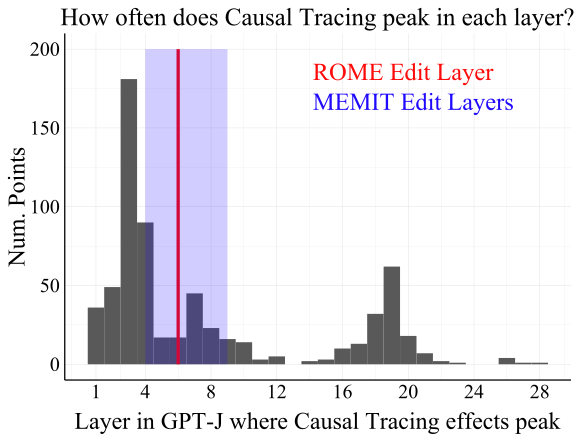
Figure 1: We visualize where 652 facts known by GPT-J are stored within the model, as localized by Causal Tracing. Model editing methods like ROME and MEMIT can successfully change knowledge in LMs by editing layers 4-9. But many facts appear to be stored outside of this range, e.g. at layers 1-3 and 16-20. What about these facts?
图 1：我们将通过因果追踪定位的、GPT-J 已知的 652 条事实在模型中的存储位置可视化。ROME 和 MEMIT 等模型编辑方法可以通过编辑第 4-9 层，成功改变语言模型中的知识。然而，许多事实似乎存储在这一范围之外，例如第 1-3 层和第 16-20 层。那么，这些事实的情况如何？
In the face of this result, we attempt to recover the connection between tracing-based localization and editing by introducing four variants of the default model editing problem. Each variant differs in terms of the input, target, or objective used in the editing problem. One variant we introduce, called Fact Forcing, is designed to match Causal Tracing along these three factors. Specifically, Fact Forcing uses a noised input and involves maximizing the probability of the correct target output, just like Causal Tracing. We find that tracing results are related to edit success for Fact Forcing. However, even for this variant, it is still better to ignore the tracing results and always choose an early-to-mid-layer MLP weight for editing. We conclude that, although Causal Tracing is a reasonable localization method that has yielded insight into how models store factual information, this insight does not actually indicate which model layers we should edit in order to manipulate what facts are stored in language models.
面对这一结果，我们通过引入默认模型编辑问题的四种变体，尝试重新建立基于追踪的定位与编辑之间的联系。各变体在编辑问题所使用的输入、目标或优化目标方面有所不同。我们引入的一种变体称为事实强制，旨在使上述三个方面与因果追踪相匹配。具体而言，事实强制与因果追踪一样，使用加噪输入，并最大化正确目标输出的概率。我们发现，对于事实强制，追踪结果与编辑成功率有关。然而，即使对于这一变体，忽略追踪结果，始终选择一个位于模型前部至中部层的 MLP 权重进行编辑，效果仍然更好。我们得出结论：尽管因果追踪是一种合理的定位方法，并且已帮助我们深入理解模型如何存储事实信息，但这些认识实际上并不能指明，为了操控语言模型中存储的事实，我们应该编辑哪些模型层。
To summarize, our conclusions are as follows:
综上，我们的结论如下：
1. We find that model edit success is essentially unrelated to where factual information is stored in models, as measured by Causal Tracing. Robustness experiments generalize this result across causal localization methods, editing methods, editing metrics, models, and datasets.
1. 我们发现，模型编辑成功率与通过因果追踪测得的模型中事实信息的存储位置基本无关。稳健性实验表明，这一结果可推广至不同的因果定位方法、编辑方法、编辑指标、模型和数据集。
2. To reconnect localization with editing performance, we introduce four variants of a standard model editing problem, including Tracing Reversal, Fact Erasure, Fact Amplification, and Fact Forcing.
2. 为重新建立定位与编辑性能之间的联系，我们引入了标准模型编辑问题的四种变体，包括追踪逆转、事实擦除、事实增强和事实强制。
3. Edit success and tracing effects correlate best in the Fact Forcing setting. However, tracing effects explain only a small fraction of the variance in editing performance, while the choice of edit layer is a much more important factor. This suggests that, surprisingly, localization insights from Causal Tracing are not useful for choosing which model layer to edit.
3. 在事实强制设置下，编辑成功率与追踪效应的相关性最强。然而，追踪效应只能解释编辑性能方差中的一小部分，而编辑层的选择是重要得多的因素。这表明，出人意料的是，因果追踪所提供的定位认识对于选择要编辑的模型层并无帮助。
2 Related Work2 相关工作
Localization. A long line of work aims to interpret what certain hidden representations represent, or, in the reverse direction, to understand how a given concept is represented in a model. Both of these efforts aim to localize behaviors to specific model components. We group these methods based on the kinds of model components they consider (e.g. layers, neurons, etc.).
定位。长期以来，大量工作致力于解释某些隐藏表示所表征的内容，或反过来理解给定概念在模型中如何表示。这两类研究都旨在将行为定位到特定的模型组件。我们根据这些方法所考虑的模型组件类型（例如层、神经元等）对其进行分类。
Many works focus on individual layers or weight matrices [37, 31, 9, 33, 11]. In this paper, we adopt the layer-wise localization method from Meng et al. [21] known as Causal Tracing, which estimates the information content of a set of representations via a denoising operation. We specifically focus on MLP layers given evidence of their role in factual association [12, 21, 13].
许多工作关注单个层或权重矩阵 [37, 31, 9, 33, 11]。本文采用 Meng et al. [21] 提出的逐层定位方法，即因果追踪，该方法通过去噪操作估计一组表示所包含的信息量。鉴于已有证据表明 MLP 层在事实关联中发挥作用 [12, 21, 13]，我们特别关注这些层。
Related to analysis at the layer level, other work aims to localize concepts to directions in a latent space, dating back to work interpreting directions in word vector space [23, 17, 41, 14, 38, 5]. One might also place “key-value memory” theories of weight matrices in this category since a key vector represents a direction in the latent space [1, 32, 12, 21].
与层级分析相关，另一些工作旨在将概念定位到潜在空间中的方向，这可以追溯到解释词向量空间中方向的研究 [23, 17, 41, 14, 38, 5]。权重矩阵的“键值记忆”理论也可以归入这一类别，因为键向量代表潜在空间中的一个方向 [1, 32, 12, 21]。
Neurons, meanwhile, are the most common focus of localization analysis. Past work explores the functions of groups of neurons and subnetworks [27, 6, 10, 4] or simply individual neurons [29, 40, 18, 2, 34, 26, 8, 19, 3, 16, 7, 36].
与此同时，神经元是定位分析最常关注的对象。以往的工作探索了神经元群和子网络的功能 [27, 6, 10, 4]，或仅研究单个神经元的功能 [29, 40, 18, 2, 34, 26, 8, 19, 3, 16, 7, 36]。
Relating Localization to Editing. Many works on localization validate the quality of their conclusions by editing neuron activations or layer weights corresponding to a particular concept, then checking that the network behavior changes appropriately. For example, Dai et al. [8] check that their “knowledge neurons” have localized a specific fact by amplifying or suppressing the expression of that fact via adjusting the corresponding neuron activations. Altogether, we find many localization analyses are validated by editing models in suggested locations [29, 18, 2, 26, 34, 8, 19, 7, 36, 4] or directions in the latent space [23, 1, 32, 21].
将定位与编辑联系起来。许多定位研究通过编辑与某一特定概念对应的神经元激活或层权重，再检查网络行为是否发生相应变化，来验证其结论的质量。例如，Dai et al. [8] 通过调整相应的神经元激活来增强或抑制某一事实的表达，以检验其“知识神经元”是否已定位到该特定事实。总体而言，我们发现，许多定位分析通过在其所指示的位置 [29, 18, 2, 26, 34, 8, 19, 7, 36, 4] 或沿潜在空间中的相应方向 [23, 1, 32, 21] 编辑模型来获得验证。
Changing model behavior by editing components suggested by localization seems like a reasonable validation step. However, in isolation, it paints an incomplete picture that has led to misleading interpretations about the connections between localization and editing. Such experiments alone do not show whether editing that specific component is (1) successful in proportion to the strength of the localization, (2) necessary to achieve the desired behavior, or (3) the best option for editing. In particular, these experiments do not show whether the same change in behavior can be achieved elsewhere in the network. Meng et al. [21] consider this question by measuring editing success across layers, averaged across data, then comparing the results with Causal Tracing conclusions also averaged across data. However, as we show, more fine-grained analysis at the datapoint level reveals the unexpected result that tracing results are unrelated to edit success. We are not aware of any work that primarily investigates the connection between localization and editing or that demonstrates better model editing at locations elsewhere in the network than those suggested by localization analysis.
通过编辑定位结果所指示的组件来改变模型行为，似乎是一个合理的验证步骤。然而，单独来看，这种做法呈现的图景并不完整，已导致人们对定位与编辑之间的联系产生误导性解读。仅凭此类实验，无法表明编辑该特定组件是否（1）其成功程度与定位强度成正比，（2）是实现期望行为所必需的，或（3）是编辑的最佳选择。特别是，这些实验并未表明，在网络中的其他位置是否也能实现相同的行为变化。Meng et al. [21] 通过测量各层在所有数据上平均的编辑成功率，并将结果与同样在所有数据上平均的因果追踪结论进行比较，考察了这一问题。然而，正如我们所展示的，在数据点层面进行更细致的分析会揭示一个出乎意料的结果：追踪结果与编辑成功与否无关。据我们所知，目前尚无工作以定位与编辑之间的联系为主要研究对象，也没有工作证明，在网络中定位分析所指示位置以外的其他位置进行编辑，可以取得更好的模型编辑效果。
3 Notation and Background3 符号与背景
3.1 Data Notation3.1 数据符号
Following Meng et al. [21], we consider facts of the form $(s,r,o)$, where $s$ represents a subject entity (e.g. Paris), $r$ a binary relation (e.g. is located in), and $o$ an object (e.g. France) for which the tuple $(s,r,o)$ represents a factual assertion about the world. In the CounterFact dataset [21], each datapoint is a prompt $P$ for some fact $(s,r,o)$. So, $P$ might be “Paris is located in” or “Paris is situated in,” to be completed by the object $o$ to form a true statement. In an abuse of notation, we will often use $s$ and $r$ to refer to textual representations of a subject and relation, for instance by writing a model’s conditional probability as $p_{\theta}(\cdot|s,r)$ instead of $p_{\theta}(\cdot|P)$. We do so in order to more easily indicate when an input is provided where the subject or relation has been manipulated (described next).
遵循 Meng et al. [21]，我们考虑形式为 $(s,r,o)$ 的事实，其中 $s$ 表示主语实体（例如巴黎），$r$ 表示二元关系（例如位于），$o$ 表示宾语（例如法国），元组 $(s,r,o)$ 表示关于世界的一项事实性断言。在 CounterFact 数据集 [21] 中，每个数据点都是针对某个事实 $(s,r,o)$ 的提示 $P$。因此，$P$ 可以是“巴黎位于”或“巴黎坐落于”，由宾语 $o$ 补全后构成一个真实陈述。为方便起见，我们将略微放宽符号的使用约定，经常使用 $s$ 和 $r$ 指代主语和关系的文本表示，例如将模型的条件概率写为 $p_{\theta}(\cdot|s,r)$，而不是 $p_{\theta}(\cdot|P)$。这样做是为了更方便地指明何时提供了主语或关系经过修改的输入（下文将予以描述）。
We make use of a few variations of the data for the fact $(s,r,o)$. The additional variables include:
对于事实 $(s,r,o)$，我们使用了几种数据变体。额外的变量包括：
1. $s^{*}$ is a “neighboring” entity to the subject $s$ (similar to $s$) for which $(s^{*},r,o)$ is a true fact like $(s,r,o)$. In CounterFact, “Marseille” is a neighboring entity to “Paris.”
1. $s^{*}$ 是主语 $s$ 的一个“邻近”实体（与 $s$ 相似），使得 $(s^{*},r,o)$ 与 $(s,r,o)$ 一样都是正确的事实。在 CounterFact 中，“马赛”是“巴黎”的一个邻近实体。
2. $r^{*}$ is a paraphrase of the relation $r$, such as “is situated in” for “is located in.”
2. $r^{*}$ 是关系 $r$ 的一种改述，例如用“坐落于”改述“位于”。
3. $s_{\textit{noise}}$ is a noised representation of the subject $s$. We add Gaussian noise to the token embeddings of $s$, following Meng et al. [21].
3. $s_{\textit{noise}}$ 是主语 $s$ 的加噪表示。遵循 Meng et al. [21]，我们向 $s$ 的词元嵌入中添加高斯噪声。
4. $o_{\textit{false}}$ is an object that incorrectly completes the tuple $(s,r,\cdot)$. CounterFact contains an $o_{\textit{false}}$ for each datapoint, intended to be the new model output when evaluating model editing methods.
4. $o_{\textit{false}}$ 是一个会错误补全元组 $(s,r,\cdot)$ 的宾语。CounterFact 为每个数据点提供了一个 $o_{\textit{false}}$，在评估模型编辑方法时，将其作为模型预期的新输出。
5. $o_{\textit{true}}$, for clarity, is the object that correctly completes the fact $(s,r,\cdot)$, from CounterFact.
5. 为明确起见，$o_{\textit{true}}$ 是 CounterFact 中能够正确补全事实 $(s,r,\cdot)$ 的宾语。
3.2 Causal Tracing3.2 因果追踪
We give a brief description of Causal Tracing here and refer readers to Meng et al. [21] for more information (see Fig. 2 for an example visualization). Causal Tracing is a method for localizing information in the forward pass of an autoregressive Transformer to specific hidden representations. For a model with $L$ layers, the input is a prompt containing $T$ tokens (including a subject $s$ and relation $r$). Given this input, the forward pass produces $T\times L$ layer outputs (one representation per $T$ tokens and $L$ layers). The algorithm aims to estimate the amount of information about the fact $(s,r,o_{\textit{true}})$ that is contained in each of these representations. We denote the representation at token $t$ and layer $\ell$ as $v_{(t,\ell)}$.
我们在此简要介绍因果追踪，更多信息请读者参阅 Meng et al. [21]（可视化示例见图 2）。因果追踪是一种将自回归 Transformer 前向传播过程中的信息定位到特定隐藏表示的方法。对于一个具有 $L$ 层的模型，输入是一个包含 $T$ 个词元的提示（其中包括主语 $s$ 和关系 $r$）。给定此输入，前向传播会产生 $T\times L$ 个层输出（$T$ 个词元中的每个词元在 $L$ 层中的每一层各有一个表示）。该算法旨在估计这些表示中的每一个所包含的关于事实 $(s,r,o_{\textit{true}})$ 的信息量。我们将词元 $t$ 在第 $\ell$ 层的表示记为 $v_{(t,\ell)}$。
The amount of factual information in $v_{(t,\ell)}$ is estimated by copying this representation into a different forward pass obtained from using a noised subject in the input:
为估计 $v_{(t,\ell)}$ 中的事实信息量，我们将该表示复制到另一次前向传播中，而后者是通过在输入中使用加噪主语得到的：
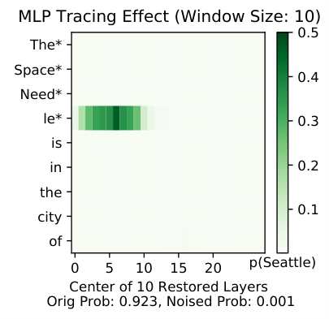
Figure 2: Visualizing Causal Tracing results over MLP layers with window size 10. Tokens with an asterisk are the noised subject tokens. Here, $p_{\theta}(o_{\textit{true}}|s,r){=}.923$ and $p_{\theta}(o_{\textit{true}}|s_{\textit{noise}},r){=}.001$.
图 2：窗口大小为 10 时，MLP 各层因果追踪结果的可视化。带星号的词元为加噪的主语词元。此处，$p_{\theta}(o_{\textit{true}}|s,r){=}.923$，且 $p_{\theta}(o_{\textit{true}}|s_{\textit{noise}},r){=}.001$。
where $s_{\textit{noise}}$ indicates that we add Gaussian noise with $\sigma=0.094$ to the token embeddings of $s$ following Meng et al. [21], and $v_{(t,\ell)}$ is the representation at token $t$ and layer $\ell$ in the forward pass on the original prompt $P=(s,r)$. The probability $p_{\theta}(o_{\textit{true}}|s_{\textit{noise}},r,v_{(t,\ell)})$ is computed by (1) running the model forward pass on the noised prompt $P^{*}=(s_{\textit{noise}},r)$ until layer $\ell$, (2) overwriting the existing representation at token $t$ and layer $\ell$ with the representation $v_{(t,\ell)}$, then (3) computing the remaining $L-\ell$ layers as normal using this adjusted set of $T$ representations as input (adjusted at token index $t$). Thus, Causal Tracing estimates the information content of a representation in terms of its effect on the probability of the true target. The results from Causal Tracing show where the representations containing information about the true target are in the model forward pass.
其中，$s_{\textit{noise}}$ 表示我们遵循 Meng et al. [21]，向 $s$ 的词元嵌入中添加 $\sigma=0.094$ 的高斯噪声，而 $v_{(t,\ell)}$ 是在原始提示 $P=(s,r)$ 上进行前向传播时，词元 $t$ 在第 $\ell$ 层的表示。概率 $p_{\theta}(o_{\textit{true}}|s_{\textit{noise}},r,v_{(t,\ell)})$ 通过以下步骤计算：(1) 在加噪提示 $P^{*}=(s_{\textit{noise}},r)$ 上运行模型的前向传播，直至第 $\ell$ 层；(2) 用表示 $v_{(t,\ell)}$ 覆盖词元 $t$ 在第 $\ell$ 层的现有表示；然后 (3) 将这组经过调整的 $T$ 个表示（在词元索引 $t$ 处进行了调整）作为输入，按正常方式计算剩余的 $L-\ell$ 层。因此，因果追踪根据某个表示对真实目标概率的影响来估计该表示的信息含量。因果追踪的结果揭示了在模型前向传播过程中，包含真实目标相关信息的表示位于何处。
In practice, a set of representations from multiple adjacent layers is copied from the clean forward pass rather than a single layer’s representation (for instance, ten layers in Fig. 2). The size of this set is referred to as the tracing window size. A window size of, e.g., three implies that the tracing effect at layer $\ell$ estimates the amount of information contained in the three representations $v_{(t,\ell-1)}$, $v_{(t,\ell)}$, and $v_{(t,\ell+1)}$. See Appendix Figs. 10 and 11 for analysis of the parameter’s effect. In this paper, we use a tracing window size of 5 by default, and we apply Causal Tracing exclusively to MLP layers, given evidence of their role in factual association [12, 21].
在实践中，从无噪声前向传播中复制的是多个相邻层的一组表示，而非单个层的表示（例如，图 2 中为十层）。这组表示的大小称为追踪窗口大小。例如，窗口大小为三意味着第 $\ell$ 层的追踪效应估计的是三个表示 $v_{(t,\ell-1)}$、$v_{(t,\ell)}$ 和 $v_{(t,\ell+1)}$ 中所包含的信息量。关于该参数影响的分析，参见附录中的图 10 和图 11。本文默认使用大小为 5 的追踪窗口，并且鉴于已有证据表明 MLP 层在事实关联中发挥作用 [12, 21]，我们仅对 MLP 层应用因果追踪。
3.3 Model Editing with ROME3.3 使用 ROME 进行模型编辑
Figure 3: An example CounterFact datapoint.
图 3：一个 CounterFact 数据样本。
We describe the ROME editing method here since we use it in our analysis in Sec. 4, and later in Sec. 5 we outline additional editing methods we consider. For mathematical detail, see Meng et al. [21].
我们在此介绍 ROME 编辑方法，因为第 4 节的分析将使用该方法，随后在第 5 节中，我们将概述所考察的其他编辑方法。数学细节参见 Meng et al. [21]。
The input to ROME includes a prompt $P=(s,r)$ and a new desired output, which is always a false target $o_{\textit{false}}$ in the CounterFact dataset. To change the model prediction to $o_{\textit{false}}$, ROME applies a rank one edit to the down-projection matrix in a prespecified MLP layer in the model. The default layer in GPT-J is layer 6, following from averaged Causal Tracing results. ROME also makes use of covariance statistics of different subject representations obtained from a larger corpus as it edits individual facts. Overall, the method is designed to optimize the quantity $p_{\theta}(o_{\textit{false}}|s,r)$ while aiming to satisfy some other constraints reflecting what a desirable model edit is (described in Sec. 3.4 next).
ROME 的输入包括一个提示 $P=(s,r)$ 和一个新的期望输出，在 CounterFact 数据集中，该输出始终是一个错误目标 $o_{\textit{false}}$。为将模型预测改为 $o_{\textit{false}}$，ROME 对模型中预先指定的某个 MLP 层的下投影矩阵进行秩一编辑。根据平均因果追踪结果，GPT-J 中默认选择第 6 层。在编辑单个事实时，ROME 还会利用从更大语料库中获得的不同主体表示的协方差统计量。总体而言，该方法旨在优化 $p_{\theta}(o_{\textit{false}}|s,r)$，同时力求满足一些反映理想模型编辑特征的其他约束（将在接下来的第 3.4 节中介绍）。
3.4 Editing Metrics3.4 编辑指标
Editing methods are typically evaluated according to their ability to (1) change the model prediction on the input $P$ provided at runtime, (2) generalize appropriately to paraphrases of the prompt $P$, and (3) avoid over-generalizing to unrelated data [42, 9, 24, 15, 25]. We adopt metrics for each desideratum that we compute with available CounterFact data. Instead of the exact “magnitude” metrics from Meng et al. [21], we use normalized versions of each metric that we design to scale from 0 to 1 depending on whether the edit was maximally (un)successful, for purposes of making scores more comparable across data points. We denote the new edited weights of the LM as $\theta^{*}$ and its pre-edit weights as $\theta$. See Fig. 3 for an example of the kinds of data these metrics are computed on.
编辑方法通常根据以下能力进行评估：(1) 改变模型对运行时提供的输入 $P$ 的预测；(2) 恰当地泛化到提示 $P$ 的释义改写；(3) 避免过度泛化到无关数据 [42, 9, 24, 15, 25]。我们针对每个目标采用相应指标，并使用现有的 CounterFact 数据进行计算。为使不同数据样本的得分更具可比性，我们没有直接采用 Meng et al. [21] 中的“幅度”指标，而是为每个指标设计了归一化版本，使其根据编辑成功或失败的程度在 0 到 1 之间取值。我们将语言模型编辑后的新权重记为 $\theta^{*}$，将编辑前的权重记为 $\theta$。这些指标所用数据类型的示例见图 3。
1. Rewrite Score. The rewrite score measures how much an edit improves the target probability $p(o_{\textit{false}}|s,r)$ as a fraction of the maximum possible improvement:
1. 重写得分。重写得分衡量编辑对目标概率 $p(o_{\textit{false}}|s,r)$ 的提升幅度占最大可能提升幅度的比例：
2. Paraphrase Score. The paraphrase score measures the target probability using syntactical paraphrases as inputs, always preserving the exact subject wording: which is averaged over multiple available paraphrases per input $P$. The score measures whether edits properly generalize across semantically equivalent prompts.
2. 释义改写得分。释义改写得分使用句法层面的释义改写作为输入来衡量目标概率，且始终保持主体的具体措辞不变：对每个输入 $P$ 的多个可用释义改写取平均值。该得分衡量编辑能否在语义等价的提示之间恰当地泛化。
3. Neighborhood Score. The neighborhood score measures whether edits change predictions for prompts with a similar subject $s^{*}$, the same relation $r$, and the same (true) objects. We scale the difference in probabilities so that 1 means the probability did not change (good), and 0 means it changed to the maximum extent possible (bad): The score measures whether edits avoid over-generalizing from the prompt $P$ to different subjects.
3. 邻域得分。邻域得分衡量编辑是否会改变模型对具有相似主体 $s^{*}$、相同关系 $r$ 和相同（真实）客体的提示的预测。我们对概率之差进行缩放，使得 1 表示概率未发生变化（好），0 表示概率变化达到了最大可能幅度（差）：该得分衡量编辑是否避免了从提示 $P$ 向不同主体的过度泛化。
4 Does Edit Success Follow From Localization?4 能否根据定位结果推断编辑是否成功？
Ostensibly, localization results should inform editing methods because it should help to know where information is stored in a model if you are going to manipulate the model’s expression of that information. More specifically, if you wanted to inject a false belief $(s,r,o_{\textit{false}})$ into a model (as defined in the ROME editing problem), it seems helpful to know which weights store the true fact $(s,r,o_{\textit{true}})$, so that you could replace some stored representation of $o_{\textit{true}}$ with that of $o_{\textit{false}}$. This underlying assumption about editing models appears in much past work on localization, where editing is used to verify localization analysis (see Sec. 2). In this section, we investigate the validity of this assumption as it applies to autoregressive Transformers.
表面上看，定位结果应当为编辑方法提供指导，因为若要操控模型对某项信息的表达，了解该信息存储于模型中的何处应当有所帮助。更具体地说，如果希望向模型中注入一个错误信念 $(s,r,o_{\textit{false}})$（如 ROME 编辑问题中所定义），那么了解哪些权重存储了真实事实 $(s,r,o_{\textit{true}})$ 似乎会有所帮助，从而可以将某种已存储的 $o_{\textit{true}}$ 表示替换为 $o_{\textit{false}}$ 的表示。这一关于模型编辑的基本假设出现在许多以往的定位研究中，这些研究使用编辑来验证定位分析（见第 2 节）。本节研究这一假设在自回归 Transformer 中是否成立。
4.1 Experiment Design4.1 实验设计
The goal of our experiments is to determine, for a given datapoint, whether edit success at a specific layer aligns with the results from Causal Tracing at that layer (see Causal Tracing description in Sec. 3.2). We operationalize this outcome and explanatory variable as follows:
我们的实验旨在确定：对于给定的数据点，在某一特定层进行编辑的成功程度，是否与该层的因果追踪结果一致（因果追踪的描述见第 3.2 节）。我们将这一结果变量和解释变量具体定义如下：
1. Edit Success. We primarily consider Rewrite Score as our measure of edit success, given that this is the main optimization objective of ROME. Note ROME achieves an average rewrite score of 99% at layer 6 of GPT-J and above 96% at layers besides the last layer of the model.
1. 编辑成功程度。我们主要采用重写得分来衡量编辑成功程度，因为这是 ROME 的主要优化目标。注意，ROME 在 GPT-J 的第 6 层取得的平均重写得分为 99%，在模型最后一层以外的各层均超过 96%。
2. Tracing Effect at layer $\ell$. Since the output of Causal Tracing is a $T\times L$ grid of estimates, we obtain a single tracing effect per layer by taking the max across the $T$ token effects at each layer (i.e., we collapse the grid in Fig. 2 down to a single curve across layers). Like our other metrics, we use a fractional tracing effect where 0 means the intervention had no effect and 1 means it fully restored the original probability $p_{\theta}(o_{\textit{true}}|s,r)$: Lastly, note we use a tracing window size of 5 (smaller than the value of 10 used in Fig. 2).
2. 第 $\ell$ 层的追踪效应。由于因果追踪的输出是一个 $T\times L$ 的估计值网格，我们在每一层的 $T$ 个词元效应中取最大值，从而为每一层得到一个追踪效应（即将图 2 中的网格压缩为一条随层变化的曲线）。与其他指标一样，我们使用以比例表示的追踪效应，其中 0 表示干预没有产生任何效应，1 表示干预完全恢复了原始概率 $p_{\theta}(o_{\textit{true}}|s,r)$：最后，注意我们使用的追踪窗口大小为 5（小于图 2 中使用的值 10）。
4.2 Model and Data4.2 模型与数据
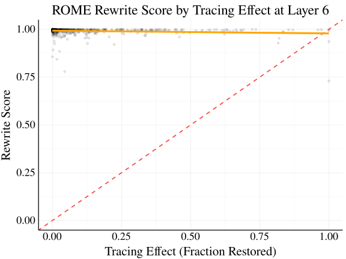
Figure 4: The correlation between ROME edit success and the tracing effect at layer 6 in GPT-J is not positive but in fact slightly negative ($\rho=-0.13$; $p<$$1\text{\times}{10}^{-3}$). The dashed red line shows a hypothetical perfect relationship.
图 4：在 GPT-J 的第 6 层，ROME 编辑成功程度与追踪效应并非正相关，而是呈轻微负相关（$\rho=-0.13$；$p<$$1\text{\times}{10}^{-3}$）。红色虚线表示一种假想的完全相关关系。
We conduct our analysis with GPT-J [35] using the CounterFact dataset, similar to Meng et al. [21]. GPT-J is a 6 billion parameter autoregressive language model. We record editing performance at layers in {1, 5, 9, 13, 17, 21, 25, 28} as well as layer 6 (the default for ROME). Note ROME achieves an average rewrite score of 99% at layer 6 and above 96% at layers besides layer 28.
与 Meng et al. [21] 类似，我们使用 CounterFact 数据集对 GPT-J [35] 进行分析。GPT-J 是一个具有 6 billion 个参数的自回归语言模型。我们记录了第 {1, 5, 9, 13, 17, 21, 25, 28} 层以及第 6 层（ROME 的默认层）的编辑性能。注意，ROME 在第 6 层取得的平均重写得分为 99%，在第 28 层以外的各层均超过 96%。
The CounterFact dataset includes datapoints consisting of a prompt, paraphrases, and neighboring points. For each point, a new (false) target is supplied for editing purposes. We show an example datapoint in Fig. 3. Note paraphrases intentionally include unrelated text preceding a syntactical paraphrase of the input, with the idea that this text should not affect the output. We select data for experiments from 10% of CounterFact, additionally filtering to a subset of facts that are correctly completed by GPT-J, in order to ensure that there is knowledge to localize in the model for each point (details in Appendix A). Our final sample size is $n=652$.
CounterFact 数据集中的数据点由提示、改写表述和邻近数据点组成。每个数据点都提供一个新的（错误）目标，用于编辑。我们在图 3 中展示了一个数据点示例。注意，改写表述有意在输入的句法改写之前加入无关文本，其设计意图是这些文本不应影响输出。我们从 CounterFact 的 10% 中选择实验数据，并进一步筛选出 GPT-J 能够正确补全的事实子集，以确保对于每个数据点，模型中都有可供定位的知识（详见附录 A）。最终样本量为 $n=652$。
4.3 Experiment Results4.3 实验结果
We present results in two ways. First, in Fig. 4, we show Rewrite Score as a function of the (fractional) tracing effect. The red dotted line shows a hypothetical perfect relationship between tracing and edit success. Surprisingly, there is not a positive relationship but a negative relationship between the rewrite score and the tracing effect (linear correlation of $\rho=-0.13$; $p<$$1\text{\times}{10}^{-3}$). This seems to fully invalidate the assumption that editing should be most effective when it occurs at a layer where information is stored about the edited fact. We wish to emphasize, however, that in most layers we simply see a near-zero rather than negative correlation, as shown in Appendix Fig. 15.
我们以两种方式呈现结果。首先，图 4 展示了重写得分随（以比例表示的）追踪效应的变化。红色点线表示追踪效应与编辑成功程度之间一种假想的完全相关关系。令人意外的是，重写得分与追踪效应之间并非正相关，而是负相关（线性相关系数为 $\rho=-0.13$；$p<$$1\text{\times}{10}^{-3}$）。这似乎完全否定了以下假设：当编辑发生在存储了与被编辑事实有关的信息的层时，编辑应当最为有效。不过，我们希望强调的是，在大多数层中，我们观察到的相关性只是接近于零，而非负相关，如附录图 15 所示。
Table 1: $R^{2}$ values for predicting ROME edit success. Tracing effects explain essentially none of the variance in rewrite score, while the choice of edit layer is very important.
表 1：预测 ROME 编辑成功程度的 $R^{2}$ 值。追踪效应对重写得分方差的解释量基本为零，而编辑层的选择则非常重要。
| $R^{2}$ Values $R^{2}$ 值 | |||
| Method 方法 | Layer 层 | Tracing Effect 追踪效应 | Both 两者 |
| ROME | 0.947 | 0.016 | 0.948 |
Our second mode of analysis is though linear regression models predicting rewrite score based on (1) the tracing effect, (2) the choice of edit layer treated as a categorical variable, or (3) both terms interacted, again treating edit layer as a categorical variable. The purpose of the models is to show how much of the variance in rewrite score is explained by one variable versus the other. We show the resulting $R^{2}$ values in Table 1. We see that the choice of layer explains almost all of the variance in rewrite score (94.7%), while adding the tracing effect to the model raises the $R^{2}$ only to 94.8%. This means that the tracing effect is able to explain only 0.1% of the variance in edit success when accounting for the choice of edit layer. These results suggest that the tracing effect is essentially unrelated to the success of model editing.
我们的第二种分析方式是使用线性回归模型，基于以下因素预测重写分数：(1) 追踪效应，(2) 作为分类变量处理的编辑层选择，或 (3) 两者的交互项，其中同样将编辑层作为分类变量处理。这些模型旨在展示，相较于另一个变量，某个变量能够解释重写分数中多大比例的方差。我们在表 1 中展示了所得的 $R^{2}$ 值。可以看到，层的选择解释了重写分数中几乎全部的方差（94.7%），而将追踪效应加入模型后，$R^{2}$ 仅提高至 94.8%。这意味着，在考虑编辑层选择后，追踪效应仅能解释编辑成功程度中 0.1% 的方差。这些结果表明，追踪效应与模型编辑的成功程度基本无关。
This is a surprising conclusion, and it naturally raises the question of why applying ROME at layer 6 works well in the first place (see average rewrite, paraphrase, and neighborhood scores across layers in Appendix Fig. 7). We suggest a possible answer to this question in Sec. 6.
这一结论令人意外，自然引出了一个问题：为什么在第 6 层应用 ROME 能够取得良好效果（各层的平均重写分数、释义分数和邻域分数见附录图 7）？我们在第 6 节中为这一问题提出了一种可能的解释。
Additional Robustness Experiments. We include additional results in Appendix B using another dataset, ZSRE [20] (Figs. 19 and 20, Table 8), and another localization method, representation zeroing [2] (Figs. 21 and 22). Further robustness experiments in Appendix C include results with (1) other measures of edit success including Paraphrase Score, Neighborhood Score, and an Overall Score (Tables 4, 5 and 6), (2) different values of the tracing window size (Fig. 12), (3) GPT2-XL rather than GPT-J (Fig. 13), (4) the original unscaled metrics from Meng et al. [21] (Fig. 14), and (5) tracing effects measured at the last subject token rather than the max across tokens (Fig. 16). We find that all of these experiments corroborate our results comparing Causal Tracing to Rewrite Score for GPT-J on CounterFact. Considering these robustness results alongside additional editing method experiments that we consider in Sec. 5 below, we note that our main conclusions generalize across different causal localization methods, editing methods, editing metrics, models, and datasets.
补充稳健性实验。我们在附录 B 中提供了使用另一个数据集 ZSRE [20]（图 19 和图 20、表 8）以及另一种定位方法——表征置零 [2]（图 21 和图 22）——所得的补充结果。附录 C 中的进一步稳健性实验包括以下结果：(1) 使用其他编辑成功程度指标，包括释义分数、邻域分数和总体分数（表 4、表 5 和表 6），(2) 使用不同的追踪窗口大小（图 12），(3) 使用 GPT2-XL 代替 GPT-J（图 13），(4) 使用 Meng et al. [21] 提出的原始未缩放指标（图 14），以及 (5) 在最后一个主语词元处测量追踪效应，而非取所有词元中的最大值（图 16）。我们发现，所有这些实验均印证了我们在 CounterFact 上针对 GPT-J 比较因果追踪与重写分数所得的结果。综合这些稳健性结果与下文第 5 节中考察的其他编辑方法实验，我们指出，我们的主要结论可推广至不同的因果定位方法、编辑方法、编辑指标、模型和数据集。
5 Reconciling Localization and Editing5 协调定位与编辑
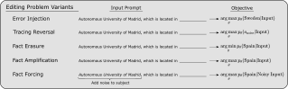
Figure 5: Depiction of editing problem variants. Rather than inject a new false fact into a model (Error Injection), we consider injecting the output obtained from noising the subject entity (Tracing Reversal), erasing a stored fact (Fact Erasure), amplifying a stored fact (Fact Amplification), or forcing a known fact onto the same kind of noisy input as used in Causal Tracing (Fact Forcing).
图 5：编辑问题变体示意图。除了向模型中注入一条新的错误事实（错误注入），我们还考虑注入对主语实体加噪后得到的输出（追踪逆转）、擦除已存储的事实（事实擦除）、增强已存储的事实（事实增强），或强制模型针对与因果追踪中所用类型相同的含噪输入输出已知事实（事实强制）。
If injecting a new fact has little to do with where an existing fact is stored in the model, perhaps there is some other editing intervention that would be more closely related to insights from tracing analysis. In this section, we propose a few variants of the model editing problem that appear more and more like Causal Tracing in terms of their input, target, and objective. Then, we repeat and extend our analysis from Sec. 4 for all of these editing problems.
如果注入一条新事实与现有事实在模型中的存储位置关系不大，那么也许存在某种其他编辑干预，与追踪分析所得的认识更为密切相关。在本节中，我们提出了模型编辑问题的若干变体，它们在输入、目标输出和优化目标方面逐渐接近因果追踪。随后，我们针对所有这些编辑问题，重复并扩展第 4 节中的分析。
5.1 Editing Problem Variants5.1 编辑问题变体
We summarize the following editing problems in Fig. 5.
我们在图 5 中概述了以下编辑问题。
1. Error Injection. The editing problem considered in Sec. 4, the objective being to maximize $p_{\theta}(o_{\textit{false}}|s,r)$.
1. 错误注入。即第 4 节中考察的编辑问题，其目标是最大化 $p_{\theta}(o_{\textit{false}}|s,r)$。
2. Tracing Reversal. We maximize $p_{\theta}(o_{\textit{noise}}|s,r)$, aiming to change the model output from $o_{\textit{true}}$ back to the output for the “original” noised input $P=(s_{\textit{noise}},r)$ in Causal Tracing, $o_{\textit{noise}}$.
2. 追踪逆转。我们最大化 $p_{\theta}(o_{\textit{noise}}|s,r)$，旨在将模型输出从 $o_{\textit{true}}$ 改回因果追踪中“原始”加噪输入 $P=(s_{\textit{noise}},r)$ 所对应的输出 $o_{\textit{noise}}$。
3. Fact Erasure. Knowing where a fact is stored could be more useful for erasing the fact rather than injecting a new one. Hence, we consider erasing a fact by minimizing $p_{\theta}(o_{\textit{true}}|s,r)$.
3. 事实擦除。了解一条事实的存储位置，对于擦除该事实可能比注入一条新事实更有用。因此，我们考虑通过最小化 $p_{\theta}(o_{\textit{true}}|s,r)$ 来擦除一条事实。
4. Fact Amplification. We reinforce known facts in the model by maximizing $p_{\theta}(o_{\textit{true}}|s,r)$. Even for correctly predicted points, this value is often not near 1, leaving room for it to be increased.
4. 事实增强。我们通过最大化 $p_{\theta}(o_{\textit{true}}|s,r)$ 来强化模型中的已知事实。即使对于预测正确的数据点，该值通常也不接近 1，因此仍有提升空间。
5. Fact Forcing. As in Causal Tracing, this method uses a noised subject representation $s_{\textit{noise}}$. We force the model to output $o_{\textit{true}}$ for this input by maximizing $p_{\theta}(o_{\textit{true}}|s_{\textit{noise}},r)$. Though this problem is of little practical significance, it is the most similar to Causal Tracing in its design, since it uses the same input as Causal Tracing and matches the goal of increasing the probability of $o_{\textit{true}}$ (see Sec. 3.2).
5. 事实强制。与因果追踪一样，该方法使用加噪的主语表征 $s_{\textit{noise}}$。我们通过最大化 $p_{\theta}(o_{\textit{true}}|s_{\textit{noise}},r)$，强制模型针对该输入输出 $o_{\textit{true}}$。尽管这一问题的实际意义不大，但其设计与因果追踪最为相似，因为它使用与因果追踪相同的输入，并且同样以提高 $o_{\textit{true}}$ 的概率为目标（见第 3.2 节）。
Note that solutions to each of these problems are evaluated according to our Rewrite Score, Paraphrase Score, and Neighborhood Score metrics from Sec. 3.4. The only difference is in the target output for the rewrite and paraphrase metrics (neighborhood is entirely identical).
请注意，各个问题的解决方案均依据第 3.4 节中的重写分数、释义分数和邻域分数指标进行评估。唯一的区别在于重写和释义指标的目标输出（邻域指标完全相同）。
5.2 Experiment Design and Additional Edit Methods5.2 实验设计与其他编辑方法
We use the same experimental procedure as in Sec. 4, except that we consider a broader set of editing methods besides ROME. We list the four methods below:
我们采用与第 4 节相同的实验流程，但除 ROME 外，还考察了更广泛的编辑方法。我们在下文列出这四种方法：
1. ROME. The edit method from Sec. 4, ROME edits a single MLP layer’s down-projection weight.
1. ROME。ROME 是第 4 节介绍的编辑方法，它编辑单个 MLP 层的下投影权重。
2. MEMIT. Though designed to edit multiple facts at once, when editing a single fact this method differs from ROME only by spreading out its update over several layers rather than one layer [22].
2. MEMIT。尽管该方法旨在一次编辑多个事实，但在编辑单个事实时，它与 ROME 的唯一区别在于将更新分散到多个层，而非单个层 [22]。
3. Constrained Finetuning (window size 1). We adopt a simple Adam-based optimization approach with an $\ell_{\infty}$-norm constraint, following Zhu et al. [42]. The window size of 1 indicates we apply this method at a single layer.
3. 约束微调（窗口大小为 1）。我们遵循 Zhu et al. [42]，采用一种带有 $\ell_{\infty}$ 范数约束的简单 Adam 优化方法。窗口大小为 1 表示我们仅在单个层上应用该方法。
4. Constrained Finetuning (window size 5). The above finetuning method on five adjacent layers.
4. 约束微调（窗口大小为 5）。在五个相邻层上应用上述微调方法。
We select these methods for their simplicity and since ROME and MEMIT are designed specifically to edit MLP layers. Note that we report results for Causal Tracing with a window size of five, so when we use MEMIT or constrained finetuning to edit five layers, these five layers can exactly match the range of restored layers from Causal Tracing.
我们选择这些方法，是因为它们简单，且 ROME 和 MEMIT 专门针对 MLP 层的编辑而设计。请注意，我们报告的是窗口大小为五的因果追踪结果，因此，当我们使用 MEMIT 或约束微调来编辑五个层时，这五个层可以与因果追踪中恢复的层范围完全匹配。
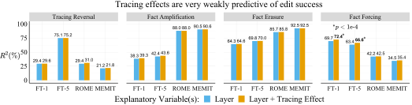
Figure 6: Tracing effects are very weakly predictive of edit success across editing problems and methods. Relative to the $R^{2}$ of a regression predicting rewrite score based on the edit layer (blue), a regression with edit layer and tracing effects (orange) improves the $R^{2}$ by at most .03 points (bolded). The choice of edit layer is a much better predictor of the rewrite score.
图 6：在不同编辑问题和方法中，追踪效应对编辑成功程度的预测能力非常弱。相较于根据编辑层预测重写得分的回归模型（蓝色）的 $R^{2}$，同时使用编辑层和追踪效应的回归模型（橙色）使 $R^{2}$ 最多提高 .03（以粗体标出）。编辑层的选择对重写得分的预测能力要强得多。
5.3 Experiment Results5.3 实验结果
Main Results.主要结果。
As in our analysis in Sec. 4, we report $R^{2}$ values for a linear regression model predicting the rewrite score based on (1) the choice of edit layer treated as a categorical variable, or (2) that variable interacted with the tracing effect. We show the results in Fig. 6, with $R^{2}$ values for each regression above their respective bars (numbers also in Appendix Table 3). We find that, relative to the Layer-only regression, tracing effects explain at most an additional 3.2% of the variance in edit success across our different editing problems and editing methods. This is a very small effect, especially compared to $R^{2}$ values from the Layer-only regression, which explains most of the variance in the outcome (58.5% on average across conditions in Fig. 6). We believe this is surprising given how the editing problem variants are designed. It would seem that knowing where a fact is stored should help with amplifying or erasing that fact, but our results appear to fully disconfirm this hypothesis. Interestingly, it also appears that it makes little difference whether we edit at one layer or five layers in order to match the number of representations restored by Causal Tracing. Based on comparisons between finetuning methods (FT-1 and FT-5) and between ROME and MEMIT (applied to 5 layers), editing at five layers does not improve the alignment between tracing and editing. In addition to our robustness results listed in Sec. 4.3, we also repeat our analysis using a subset of points where tracing effects are concentrated to a small number of layers, in order to focus on points where MEMIT and FT-5 edit all of the layers where the fact is stored. Results are nearly identical for this subset of the data (see Appendix B).
与第 4 节中的分析一样，我们报告线性回归模型的 $R^{2}$ 值，该模型根据以下变量预测重写得分：（1）作为分类变量的编辑层选择，或（2）该变量与追踪效应的交互项。我们在图 6 中展示结果，各回归模型的 $R^{2}$ 值标于相应柱形上方（具体数值也见附录表 3）。我们发现，相较于仅使用层的回归模型，在不同编辑问题和编辑方法中，追踪效应最多只能额外解释编辑成功程度方差的 3.2%。这一效应非常小，尤其是与仅使用层的回归模型的 $R^{2}$ 值相比；后者能够解释结果方差的大部分（在图 6 的各实验条件下平均为 58.5%）。考虑到这些编辑问题变体的设计方式，我们认为这一结果令人意外。直观上，知道一个事实存储在何处应当有助于强化或擦除该事实，但我们的结果似乎完全否定了这一假设。有趣的是，为了与因果追踪所恢复的表征数量相匹配而在一个层或五个层上进行编辑，似乎也几乎没有区别。对微调方法（FT-1 和 FT-5）以及 ROME 和 MEMIT（应用于 5 个层）的比较表明，在五个层上进行编辑并不能提高追踪与编辑之间的一致性。除了第 4.3 节列出的稳健性结果外，我们还使用追踪效应集中于少数层的数据点子集重复了分析，以聚焦于 MEMIT 和 FT-5 能够编辑事实存储所在全部层的数据点。该数据子集的结果几乎相同（见附录 B）。
One Successful Case.一个成功案例。
We see the strongest positive relationship between edit success and tracing effects for Fact Forcing with finetuning methods. Here, we find that tracing effects explain an additional 3% of the variance in edit success (up from 1.5% for other experiments). This effect is statistically significant at $p<$1\text{\times}{10}^{-4}$$ according to an F-test comparing the two models (see visualization in Appendix Fig. 17). The result for Fact Forcing suggests that using $s_{\textit{noise}}$ rather than $s$ in the model input is the cause of the positive relationship between editing and localization. We rule out the choice of target and maximizing vs. minimizing the target probability as possible causes based on the design of each problem variant (see Fig. 5): (1) the choice of target is not important since results are similar for Error Injection, Tracing Reversal, and Fact Amplification, and (2) maximizing vs. minimizing the target probability is not important since results are similar for Fact Erasure and Fact Amplification. Yet, tracing effects are still weakly informative of Fact Forcing editing if they explain only 3% of the variance in edit success. This points to there being other deeper reasons for localization results being unrelated to editing success.
我们发现，在采用微调方法的 Fact Forcing 中，编辑成功率与追踪效应之间的正相关关系最强。在此情形下，我们发现，追踪效应可额外解释编辑成功率方差的 3%（高于其他实验中的 1.5%）。根据比较这两个模型的 F 检验，该效应在 $p<$1\text{\times}{10}^{-4}$$ 水平上具有统计显著性（可视化结果见附录图 17）。Fact Forcing 的结果表明，在模型输入中使用 $s_{\textit{noise}}$ 而非 $s$ 是编辑与定位之间呈正相关关系的原因。根据各问题变体的设计（见图 5），我们排除了目标的选择以及最大化还是最小化目标概率这两个可能的原因：(1) 目标的选择并不重要，因为 Error Injection、Tracing Reversal 和 Fact Amplification 的结果相似；(2) 最大化还是最小化目标概率并不重要，因为 Fact Erasure 和 Fact Amplification 的结果相似。然而，如果追踪效应仅能解释编辑成功率方差的 3%，那么它对 Fact Forcing 编辑的指示作用仍然很弱。这表明，定位结果与编辑成功率无关还存在其他更深层次的原因。
6 Discussion6 讨论
Does Causal Tracing tell us anything? We show that Causal Tracing is not indicative of which layer to select for model editing. However, this does not mean that localization insights from Causal Tracing have been useless. Causal Tracing has helped reveal the role that early-to-mid-range MLP representations at the last subject token index play in factual association in autoregressive language models, and ROME does perform better on average when optimizing the last subject token representation rather than another token representation [21]. Past work finds that both MLP and attention layers can show large Causal Tracing effects, and additional empirical editing experiments then demonstrate that it is preferable to edit MLP weights [21].
因果追踪能告诉我们什么吗？我们表明，因果追踪无法指示应选择哪一层进行模型编辑。然而，这并不意味着因果追踪提供的定位见解毫无用处。因果追踪帮助揭示了自回归语言模型中，位于最后一个主体词元位置的前期至中期 MLP 表征在事实关联中所起的作用，而且，与优化其他词元的表征相比，ROME 在优化最后一个主体词元的表征时，平均表现确实更好 [21]。以往研究发现，MLP 层和注意力层都可能表现出较大的因果追踪效应，而进一步的实证编辑实验则表明，编辑 MLP 权重更为可取 [21]。
Why is edit success high at layers where the edited fact is not actually stored? First, we note that information is gradually accumulated across layers in a Transformer forward pass, as discovered by past work [31, 12, 21, 22, 13]. We suggest that it is possible to “override” the information in layer $\ell$ with an edit to another layer $k$ (where $k<\ell$ or $k>\ell$). Since ROME is typically effective across a large range of layers (see Fig. 9), it appears that ROME can override the information accrued across 5 or 10 layers of a forward pass with an edit to a single layer outside of that range of layers. We summarize this hypothesis as follows: Many layers could store a fact, and it happens that some do.
为什么在实际上并未存储被编辑事实的层上，编辑成功率仍然很高？首先，我们指出，正如以往研究 [31, 12, 21, 22, 13] 所发现的，在 Transformer 的前向传播过程中，信息会逐层累积。我们认为，通过编辑另一层 $k$（其中 $k<\ell$ 或 $k>\ell$），有可能“覆盖”第 $\ell$ 层中的信息。由于 ROME 通常在较大范围的层上都有效（见图 9），因此，ROME 似乎能够通过编辑该层范围之外的单个层，覆盖一次前向传播过程中跨越 5 或 10 层所累积的信息。我们将这一假设概括如下：许多层都能够存储某个事实，而其中一些层恰好确实存储了该事实。
If this hypothesis were true, it would be surprising because one cannot arbitrarily swap layers in a Transformer model without greatly damaging model performance [39]. That is, it should matter where information enters the residual stream, since later layers strongly depend on receiving the right incoming information from prior layers. We leave it to future work to further investigate this hypothesis.
如果这一假设成立，那将令人惊讶，因为在 Transformer 模型中，不能任意交换各层而不严重损害模型性能 [39]。也就是说，信息在何处进入残差流应当很重要，因为后续层高度依赖于从先前层接收到正确的输入信息。我们将对这一假设的进一步研究留待未来工作。
What do our results imply about using model editing to validate localization claims? We interpret our results to suggest that Causal Tracing answers a different question than model editing does. That is, Causal Tracing answers a question about where factual information is carried in representations in a Transformer forward pass, and this question turns out to be a different question than the editing question of where is best to intervene in the Transformer in order to change the factual information it expresses. It seems critical, then, to carefully formalize the questions that one wishes to answer before (1) validating the results of localization via editing or (2) motivating the design of an editing method via localization, because the conclusions that can be drawn from a particular localization method might not be relevant for the performance of a given model editing method. This would not imply the conclusions from the localization analysis are invalid, though. For instance, we believe Causal Tracing reveals interesting insights about where MLP representations contain factual information (see Figs. 1 and 2). We only wish to suggest that localization analysis might answer a different question than the question answered by model editing.
我们的结果对使用模型编辑来验证定位论断有何启示？我们认为，我们的结果表明，因果追踪与模型编辑回答的是不同的问题。也就是说，因果追踪回答的是，在 Transformer 的前向传播过程中，事实信息由何处的表征承载；而事实证明，这一问题不同于编辑所关注的问题，即为了改变 Transformer 所表达的事实信息，最好在其何处进行干预。因此，在 (1) 通过编辑验证定位结果，或 (2) 通过定位为编辑方法的设计提供依据之前，似乎至关重要的是，先仔细地将希望回答的问题形式化，因为从特定定位方法中得出的结论，可能与给定模型编辑方法的性能无关。不过，这并不意味着定位分析得出的结论无效。例如，我们认为，因果追踪对于何处的 MLP 表征包含事实信息提供了有意义的见解（见图 1 和图 2）。我们只是想指出，定位分析所回答的问题可能不同于模型编辑所回答的问题。
These observations may have implications for the array of studies that validate their localization analysis by manipulating a certain model behavior via an intervention on the model component recommended by the analysis [29, 18, 2, 1, 26, 34, 8, 19, 7, 36, 4, 21]. Do model editing experiments provide additional evidence for claims about which model components are responsible for certain behaviors? If localization and editing answer different questions, editing experiments will not provide further evidence for localization conclusions.
这些观察结果可能对一系列研究具有启示意义：这些研究通过干预定位分析所推荐的模型组件来操控某种模型行为，从而验证其定位分析 [29, 18, 2, 1, 26, 34, 8, 19, 7, 36, 4, 21]。对于哪些模型组件负责某些行为的论断，模型编辑实验是否提供了额外证据？如果定位与编辑回答的是不同的问题，那么编辑实验就不会为定位结论提供进一步的证据。
7 Conclusion7 结论
We obtain the surprising result that model edit success is essentially unrelated to where factual information is stored in models, as measured by Causal Tracing. Faced with this result, we attempt to reconnect tracing-based localization with edit success by introducing four variants of the Error Injection problem using the CounterFact dataset. We find that edit success and tracing effects correlate best in our Fact Forcing setting. However, even in this case, tracing effects explain only a small fraction of the variance in editing performance, while the choice of edit layer is a much more important factor. This suggests that, counterintuitively, better mechanistic understanding of how pretrained language models work may not always translate to insights about how to best change their behavior.
我们得到了一个令人惊讶的结果：模型编辑的成功与因果追踪所测得的模型中事实信息的存储位置基本无关。面对这一结果，我们使用 CounterFact 数据集引入了错误注入问题的四种变体，试图重新建立基于追踪的定位与编辑成功之间的联系。我们发现，在我们的事实强制设定中，编辑成功与追踪效应的相关性最强。然而，即使在这种情况下，追踪效应也只能解释编辑性能方差的一小部分，而编辑层的选择则是重要得多的因素。这表明，与直觉相悖的是，对预训练语言模型工作机制的更深入理解，可能并不总能转化为关于如何最有效地改变其行为的见解。
8 Limitations8 局限性
We note a few limitations of the experiments conducted in this paper:
我们指出，本文所开展的实验存在以下几点局限性：
(1) We work only with the CounterFact and ZSRE datasets, which we use as short English prompts with factual completions corresponding to a specific set of relations between subject and object entities. This is a basic form of factual knowledge, and localization and editing analysis may yield different trends for other forms of knowledge.
(1) 我们仅使用 CounterFact 和 ZSRE 数据集，将其中的内容用作简短的英文提示，其事实性补全内容对应于主体实体与客体实体之间的一组特定关系。这是事实知识的一种基本形式，对于其他形式的知识，定位与编辑分析可能呈现出不同的趋势。
(2) We work with two autoregressive Transformers chosen for their representativeness of large language models that show a capacity for expressing factual knowledge in response to natural language prompts. However, the conclusions from our analysis may not generalize to models larger than GPT-J (6B parameters) that are known to exhibit phase changes in their behavior under prompting.
(2) 我们采用了两个自回归 Transformer，选择它们是因为它们能够代表那些在响应自然语言提示时表现出事实知识表达能力的大型语言模型。然而，我们的分析结论可能无法推广到规模大于 GPT-J（6B 参数）的模型，已知这些模型在提示下的行为会出现相变。
(3) We use a particular set of localization and editing methods, including representation denoising and zeroing at the layer level and layer-level MLP editing methods that inject new facts or amplify or erase existing facts. Our conclusions may not necessarily hold for the breadth of localization and editing methods from work related to this paper, and one should be cautious in applying our conclusions beyond our experimental setting.
(3) 我们使用了一组特定的定位和编辑方法，包括层级的表征去噪与置零，以及用于注入新事实、增强或擦除现有事实的层级 MLP 编辑方法。我们的结论未必适用于与本文相关的研究中广泛采用的定位和编辑方法，因此，在将我们的结论应用于本实验设置之外的情境时应保持谨慎。
9 Broader Impacts9 更广泛的影响
It is possible that increased mechanistic understanding of models improves our ability to edit them at some point in the future. In fact, we consider it unlikely that interpretability results never give insight into improving model editing methods. Thus, to the extent that model editing is a dual use methodology, which could be used to inject harmful beliefs or dangerous knowledge into models, interpretability results may enhance the effectiveness of these malicious use cases. However, these concerns are relatively far removed from our analysis, which focuses on the connection between localization and editing performance. Ultimately, we hope that studies of mechanistic interpretability and model editing improve our ability to control language models.
对模型机制理解的加深，有可能在未来某个时点提升我们编辑模型的能力。事实上，我们认为，可解释性研究结果始终无法为改进模型编辑方法提供启示的可能性很低。因此，鉴于模型编辑是一种可被用于向模型注入有害信念或危险知识的两用方法，可解释性研究结果可能会提高这些恶意用途的有效性。然而，这些担忧与我们的分析相距较远，因为我们的分析聚焦于定位与编辑性能之间的联系。最终，我们希望机制可解释性和模型编辑研究能够提升我们控制语言模型的能力。
Acknowledgements致谢
We thank Kevin Meng and David Bau for helpful discussions of the methods used in this paper and the conclusions we reach from our experiments. Additionally, we thank Jasmijn Bastings and Lucas Dixon for feedback on writing and presentation of results, as well as the paper’s reviewers for their useful comments. This work was conducted while Peter Hase was a student researcher at Google.
我们感谢 Kevin Meng 和 David Bau 就本文所用方法以及我们从实验中得出的结论进行的有益讨论。此外，我们感谢 Jasmijn Bastings 和 Lucas Dixon 对论文写作和结果呈现提出的反馈，也感谢论文审稿人提出的有益意见。本研究是在 Peter Hase 于 Google 担任学生研究员期间开展的。
Appendix A Experiment Details附录 A 实验细节
Data Licenses.数据许可证。
CounterFact is available by the MIT license at https://github.com/kmeng01/rome Meng et al. [2022a], and ZSRE is available publicly at http://nlp.cs.washington.edu/zeroshot/ Levy et al. [2017].
CounterFact 依据 MIT 许可证在 https://github.com/kmeng01/rome 提供，见 Meng et al. [2022a]；ZSRE 在 http://nlp.cs.washington.edu/zeroshot/ 公开提供，见 Levy et al. [2017]。
Data Filtering.数据筛选。
We filter the CounterFact dataset to a subset of facts that are correctly completed by GPT-J, in order to ensure that there is knowledge to localize in the model for each point. We mark a completion correct when $o_{\textit{true}}$ appears among the first 36 tokens sampled from the model given the prompt $P$ using greedy decoding. GPT-J achieves a completion accuracy of 32.6% under this scheme, and after starting with about 10% of the CounterFact dataset, our final sample size is $n=652$. We perform additional filtering specifically for model editing in the Fact Erasure condition, where we filter points to have a target probability $p_{\theta}(o_{\textit{true}}|s,r)$ of at least .02, so that there is a reasonable amount of probability mass to be erased. In this condition, we have $n=489$ points.
我们对 CounterFact 数据集进行筛选，仅保留 GPT-J 能够正确补全的事实子集，以确保模型中存在与每个数据点对应的可定位知识。在给定提示 $P$ 并采用贪心解码时，如果 $o_{\textit{true}}$ 出现在从模型中采样得到的前 36 个词元中，我们就将该补全标记为正确。在这一判定方案下，GPT-J 的补全准确率为 32.6%；我们最初使用约 10% 的 CounterFact 数据集，筛选后的最终样本量为 $n=652$。在事实擦除条件下，我们还专门针对模型编辑进行额外筛选，仅保留目标概率 $p_{\theta}(o_{\textit{true}}|s,r)$ 至少为 .02 的数据点，以确保有足够的概率质量可供擦除。在此条件下，我们共有 $n=489$ 个数据点。
Compute.计算资源。
Experiments were run on a single NVIDIA A6000 GPU with 48gb memory. Computing editing performance for $n=652$ points with GPT-J for a single edit method applied across model layers in the set {1, 5, 9, 13, 17, 21, 24, 28} could take about eight hours. Saving causal tracing or representation zeroing results for these datapoints takes about twelve hours. Regression analyses and plots can be made on demand (code in supplement) given the data from the editing and localization experiments.
实验在一块配备 48gb 显存的 NVIDIA A6000 GPU 上运行。对于应用于模型层集合 {1, 5, 9, 13, 17, 21, 24, 28} 中各层的单一编辑方法，使用 GPT-J 计算 $n=652$ 个数据点上的编辑性能可能需要约八小时。保存这些数据点的因果追踪或表征置零结果需要约十二小时。获得编辑和定位实验的数据后，即可按需进行回归分析并绘图（代码见补充材料）。
Edit Method Tuning.编辑方法调优。
We tune the edit methods to have high rewrite scores while not trading off too aggressively against paraphrase and neighborhood scores. More specifically, this means we tune methods to have rewrite scores no higher than 99% (note methods can easily get above 99% rewrite score), separately for each editing problem variant. The tuning is done with the first 100 points of the CounterFact dataset, editing layer 6 for GPT-J and 18 for GPT2-XL. For ROME and MEMIT methods, we tune over the KL regularization weight values in the set {.0625, .9, 1}. For constrained finetuning, we tune over the $L_{\infty}$ norm weight values in the set {1e-4, 5e-5, 2e-5, 1e-5}. For both methods, we adopt default parameters from Meng et al. [2022b] unless otherwise stated. We describe the relevant hyperparameters below, for GPT-J first:
我们对编辑方法进行调优，使其获得较高的重写得分，同时避免过度牺牲释义得分和邻域得分。更具体地说，这意味着我们针对每一种编辑问题变体分别调优，使方法的重写得分不高于 99%（注意，这些方法很容易获得超过 99% 的重写得分）。调优使用 CounterFact 数据集的前 100 个数据点，对 GPT-J 编辑第 6 层，对 GPT2-XL 编辑第 18 层。对于 ROME 和 MEMIT 方法，我们在集合 {.0625, .9, 1} 中选择 KL 正则化权重值进行调优。对于受约束微调，我们在集合 {1e-4, 5e-5, 2e-5, 1e-5} 中选择 $L_{\infty}$ 范数权重值进行调优。对于这两种方法，除非另有说明，我们均采用 Meng et al. [2022b] 中的默认参数。下面介绍相关超参数，首先是 GPT-J：
1. Error Injection. FT-1: norm constraint of 1e-4. FT-5: norm constraint of 2e-5. ROME: regularization weight of 1. MEMIT: regularization weight of 0.9.
1. 错误注入。FT-1：范数约束为 1e-4。FT-5：范数约束为 2e-5。ROME：正则化权重为 1。MEMIT：正则化权重为 0.9。
2. Tracing Reversal. FT-1: Norm constraint of 1e-5. FT-5: Norm constraint of 2e-5. FT-5: 2e-5. ROME: default parameters. MEMIT: default parameters.
2. 追踪逆转。FT-1：范数约束为 1e-5。FT-5：范数约束为 2e-5。FT-5：2e-5。ROME：默认参数。MEMIT：默认参数。
3. Fact Erasure. FT-1: norm constraint of 1e-5. FT-5: norm constraint of 1e-5. ROME: default parameters. MEMIT: default parameters.
3. 事实擦除。FT-1：范数约束为 1e-5。FT-5：范数约束为 1e-5。ROME：默认参数。MEMIT：默认参数。
4. Fact Amplification. FT-1: norm constraint of 1e-5. FT-5: norm constraint of 1e-5. ROME: default parameters. MEMIT: default parameters.
4. 事实增强。FT-1：范数约束为 1e-5。FT-5：范数约束为 1e-5。ROME：默认参数。MEMIT：默认参数。
5. Fact Forcing. Note that for all methods we decide to increase the number of gradient steps, as convergence takes longer for finetuning (from 25 to 50 steps) and for the gradient-based optimization for $v^{*}$ in ROME (from 20 to 25 steps). FT-1: norm constraint of 1e-4. FT-5: norm constraint of 1e-4. ROME: 25 gradient steps for finding $v^{*}$. MEMIT: default parameters (already set to 25 steps).
5. 事实强制。请注意，对于所有方法，我们都决定增加梯度步数，因为微调（从 25 步增加到 50 步）以及 ROME 中针对 $v^{*}$ 的基于梯度的优化（从 20 步增加到 25 步）需要更长时间才能收敛。FT-1：范数约束为 1e-4。FT-5：范数约束为 1e-4。ROME：使用 25 个梯度步求解 $v^{*}$。MEMIT：使用默认参数（已设为 25 步）。
We run only the Error Injection and Fact Forcing conditions for GPT2-XL. Hyperparameters are as follows:
对于 GPT2-XL，我们仅在错误注入和事实强制条件下开展实验。超参数如下：
1. Error Injection. FT-1: norm constraint of 1e-3. FT-5: norm constraint of 1e-4. ROME: default parameters. MEMIT: default parameters.
1. 错误注入。FT-1：范数约束为 1e-3。FT-5：范数约束为 1e-4。ROME：使用默认参数。MEMIT：使用默认参数。
2. Fact Forcing. FT-1: norm constraint of 5e-4. FT-5: norm constraint of 5e-5. ROME: default parameters. MEMIT: default parameters.
2. 事实强制。FT-1：范数约束为 5e-4。FT-5：范数约束为 5e-5。ROME：使用默认参数。MEMIT：使用默认参数。
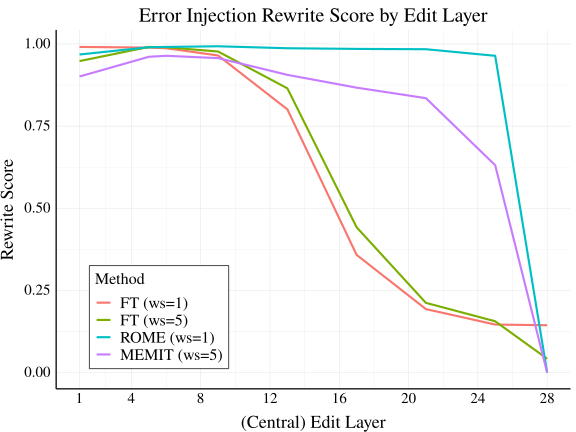
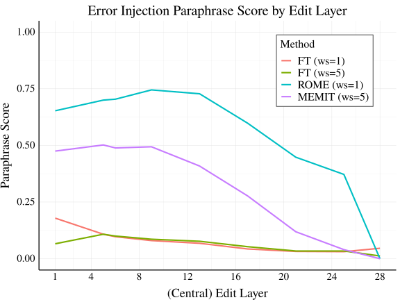
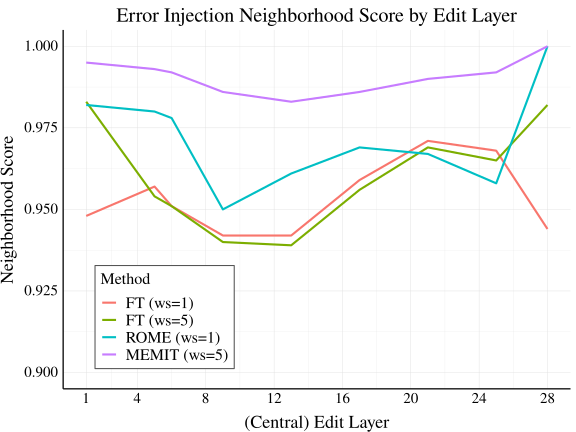
Figure 7: Edit success metrics for our four editing methods, under the Error Injection objective. Left: Rewrite, Center: Paraphrase, Right: Neighborhood.
图 7：错误注入目标下四种编辑方法的编辑成功指标。左：重写；中：释义；右：邻域。
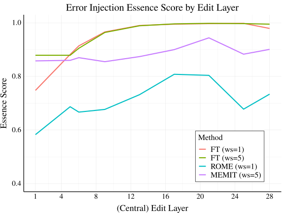
Figure 8: Essence score by edit layer, for our four editing methods, under the Error Injection objective.
图 8：错误注入目标下四种编辑方法的本质得分随编辑层的变化。
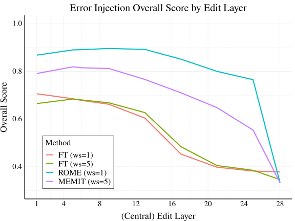
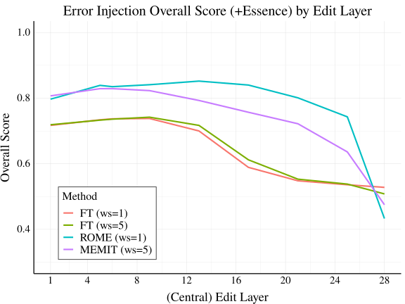
Figure 9: Overall edit success for our four editing methods, under the Error Injection objective. Left: The mean of Rewrite, Paraphrase, and Neighborhood Scores. Right: the mean score with Essence Score included.
图 9：错误注入目标下四种编辑方法的总体编辑成功情况。左：重写、释义和邻域得分的均值。右：纳入本质得分后的平均得分。
Appendix B Additional Results附录 B 补充结果
ZSRE Dataset.ZSRE 数据集。
Here, we describe experiments with the ZSRE dataset, which is commonly used in past editing method papers De Cao et al. [2021a], Mitchell et al. [2021]. ZSRE includes naturalistic questions rather than prompts intended for autoregressive cloze completion, as in CounterFact. Following past work Meng et al. [2022a], we use GPT-J to answer ZSRE questions in a zero-shot manner, and we edit the model with ROME. We report results for ZSRE via plots of edit success vs. tracing effect in Figs. 19 (rewrite score) and 20 (overall score), accompanied by regression analysis results in Table 8. We find that results with ZSRE match our conclusions with CounterFact, as the results are quite similar to plots and regressions with CounterFact data. Tracing effects are not predictive of edit success.
这里，我们介绍在 ZSRE 数据集上开展的实验，该数据集常用于以往有关编辑方法的论文 De Cao et al. [2021a], Mitchell et al. [2021]。ZSRE 包含自然语言问题，而非 CounterFact 中用于自回归完形填空的提示。遵循以往工作 Meng et al. [2022a]，我们使用 GPT-J 以零样本方式回答 ZSRE 问题，并使用 ROME 编辑该模型。我们在图 19（重写得分）和图 20（总体得分）中，通过编辑成功程度与追踪效应的关系图报告 ZSRE 的结果，并在表 8 中给出相应的回归分析结果。我们发现，ZSRE 上的结果与我们在 CounterFact 上得出的结论一致，因为这些结果与 CounterFact 数据上的图示和回归结果十分相似。追踪效应无法预测编辑成功程度。
Representation Zeroing.表征置零。
Representation zeroing is a common localization technique where neural activations are manually set to zero during a model forward pass Lakretz et al. [2019], Bau et al. [2020b]. We implement a form of representation zeroing that is exactly like Causal Tracing, except instead of denoising already-noised representations, we set clean representations to zero. Specifically, we simply run a normal forward pass until a certain set of layers (window size=5), where we zero out representation values for the MLP output representations at the subject token indices within those layers (then continue the forward pass). The localization effect is computed as the proportion of the original predicted probability that is deleted via the zeroing operation (ranging from no effect as 0% to 100% of probability deleted as 100%). These new results are shown in Figs. 21 for rewrite score and 22 for overall score, using ROME on GPT-J with CounterFact data. We obtain the same conclusions as our analysis with causal tracing: localization via representation zeroing is not predictive of edit success. Specifically, we see correlations between edit success and localization effect to be near zero across layers (using either rewrite score or overall score for edit success).
表征置零是一种常见的定位技术，即在模型前向传播过程中手动将神经激活设为零 Lakretz et al. [2019], Bau et al. [2020b]。我们实现了一种表征置零方法，其操作与因果追踪完全相同，唯一的区别是：我们不对已添加噪声的表征进行去噪，而是将干净表征设为零。具体而言，我们先正常执行前向传播，直至到达某组层（窗口大小=5），然后将这些层中主语词元索引处的 MLP 输出表征值置零（随后继续前向传播）。定位效应计算为置零操作所消除的概率占原始预测概率的比例（从无影响时的 0%，到概率完全被消除时的 100%）。这些新结果通过在 CounterFact 数据上使用 ROME 编辑 GPT-J 得到，其中重写得分见图 21，总体得分见图 22。我们得出了与因果追踪分析相同的结论：通过表征置零进行定位无法预测编辑成功程度。具体而言，我们发现，在各层中，编辑成功程度与定位效应之间的相关性均接近零（无论使用重写得分还是总体得分衡量编辑成功程度）。
Highly concentrated tracing effects.高度集中的追踪效应。
Since Causal Tracing analysis suggests that information accrues gradually across layers (see Fig. 10), it seems possible that information is simply so diffusely spread across model layers that no matter what layer you edit, you will be editing a layer where a fact is at least stored in part. Based on this observation, we want to test whether tracing effects correlate better with edit success specifically when tracing effects are concentrated in a small number of layers. This condition represents that a fact appears to be stored in a small number of layers and not elsewhere. We hope that by editing in that range of layers, we can more easily manipulate that fact. To identify points with concentrated tracing effects, we use a heuristic for filtering points. Given the output of Causal Tracing analysis for a point, i.e. one effect per layer (the max across tokens), we define the point to have concentrated tracing effects when there are no more than three layers that have at least 50% of the maximum effect across layers (besides the layer with the max effect itself). Under this criterion, about 10% of the data (74 of 652 cases) have concentrated effects. Note we use our default tracing window size of 5 with the 28 layer GPT-J model for this experiment.
由于因果追踪分析表明，信息在各层间逐渐累积（见图 10），因此可能存在这样一种情况：信息在模型各层中的分布十分分散，以至于无论编辑哪一层，所编辑的层都至少存储了某一事实的部分信息。基于这一观察，我们希望检验，特别是在追踪效应集中于少数层时，追踪效应与编辑成功程度之间的相关性是否更强。这种情况表明，某一事实似乎存储在少数层中，而未存储在其他层中。我们希望，通过在这一层范围内进行编辑，能够更容易地操纵该事实。为识别追踪效应集中的数据点，我们使用一种启发式方法筛选数据点。给定某个数据点的因果追踪分析输出，即每层一个效应值（取各词元上的最大值），如果除效应值最大的层本身之外，效应值至少达到各层最大效应值的 50% 的层不超过三层，我们便将该数据点定义为具有集中的追踪效应。按照这一标准，约 10% 的数据（652 个案例中的 74 个）具有集中的效应。请注意，本实验使用具有 28 层的 GPT-J 模型，追踪窗口大小采用默认值 5。
We show the results from our analysis on this data subset in Table 2, and we observe no changes in our main conclusions. For ROME with Error Injection, the added effect is 0.2%. Across editing problems and edit methods, the maximum added effect of including tracing effects on $R^{2}$ values for predicting rewrite score remains at 3.2% (for Fact Forcing with constrained finetuning). Thus, we conclude that even when facts appear to be stored in a small number of layers, localization results from Causal Tracing are still not informative about editing success, while the choice of edit layer is a far more important factor in whether a fact is successfully edited.
我们在表 2 中展示了对这一数据子集的分析结果，并观察到主要结论没有变化。对于错误注入中的 ROME，额外效应为 0.2%。在各类编辑问题和编辑方法中，纳入追踪效应对预测重写得分的 $R^{2}$ 值所带来的额外效应最大仍为 3.2%（对应采用受约束微调的事实强制）。因此，我们得出结论：即使事实似乎存储于少数几个层中，因果追踪的定位结果仍无法提供有关编辑成功与否的有效信息，而编辑层的选择对于能否成功编辑事实而言是一个重要得多的因素。
Table 2: $R^{2}$ values for predicting ROME edit success in Error Injection, subsetted to 10% of the data that has the most concentrated tracing effects in a small number of layers. Even when facts appear to be stored at a small number of layers and not other layers, tracing effects are still not predictive of editing performance.
表 2：在错误注入中预测 ROME 编辑成功与否的 $R^{2}$ 值，所用子集为追踪效应最集中于少数几个层的 10% 数据。即使事实似乎仅存储于少数几个层而非其他层中，追踪效应仍无法预测编辑性能。
| Concentrated Data 效应集中数据 | $R^{2}$ Values $R^{2}$ 值 | ||
| Method 方法 | Layer 层 | Tracing Effect 追踪效应 | Both 两者 |
| ROME | 0.927 | 0.02 | 0.929 |
Measuring essence drift.本质漂移的度量。
Meng et al. [2022a] describe one possible consequence of model editing as essence drift, which occurs when core properties of an entity change after attempting to edit only one property of that entity. For example, changing where an island is located might also cause the model to nonsensically treat the island as a university campus (see example in Meng et al. [2022a]).
Meng et al. [2022a] 将模型编辑的一种可能后果描述为本质漂移，即在尝试仅编辑实体的某一属性后，该实体的核心属性发生变化。例如，更改一座岛屿的位置，也可能导致模型不合常理地将该岛屿视为大学校园（参见 Meng et al. [2022a] 中的示例）。
We aim to obtain an automatic metric to serve as a rough proxy for essence drift. A related metric is calculated with “Local Neutral” data involving the same subject entity but with other properties that are logically neutral with the original property of the subject being edited Hase et al. [2021]. However, we do not have “Local Neutral” data for the CounterFact dataset, and essence drift aims to specifically measure changes to core properties of a subject.
我们旨在获得一种自动化指标，作为本质漂移的粗略代理指标。一个相关指标使用“局部中性”数据计算得到，这些数据涉及同一主体实体，但描述的是与该主体被编辑的原始属性在逻辑上呈中性关系的其他属性 Hase et al. [2021]。然而，我们没有 CounterFact 数据集的“局部中性”数据，而且本质漂移旨在专门度量主体核心属性的变化。
Therefore, we automatically estimate changes to known properties of the subject $s$ by calculating the change in model perplexity over samples of text that were drawn from the pre-edit model given the prompt “$s$ is a ” (which tend to describe a number of key properties of the subject $s$). We term these samples essence texts, and we obtain five samples per subject prompt by sampling with multinomial top-k sampling using $k=5$. Given our essence texts, we measure the perplexity over the samples before and after editing a fact in the model, for every edited fact in our dataset. Note this is quite similar to the essence drift regularization objective used in the ROME optimization objective Meng et al. [2022a], but we consider it as a metric here. We scale the change in perplexity to a fraction of 5, with the cut-off of 5 chosen to represent a maximally bad change to the model perplexity. Similar to our other metrics, our essence score is 1 if model perplexity on the essence texts does not change after editing the model (capping to 1 in cases of slight decreases in perplexity), and it is 0 if the perplexity increases by 5 or more.
因此，我们通过计算模型在若干文本样本上的困惑度变化，自动估计主体 $s$ 的已知属性变化；这些文本样本由编辑前的模型在给定提示“$s$ 是一个 ”的条件下采样得到（通常会描述主体 $s$ 的若干关键属性）。我们将这些样本称为本质文本，并采用 $k=5$ 的多项式 top-k 采样，为每个主体提示获取五个样本。对于数据集中每一条被编辑的事实，我们在模型中编辑该事实前后，分别度量模型在这些本质文本样本上的困惑度。请注意，这与 ROME 优化目标中使用的本质漂移正则化目标十分相似 Meng et al. [2022a]，但我们在此将其用作度量指标。我们将困惑度变化除以 5 进行缩放，选择 5 作为截断阈值，以表示模型困惑度的最差变化。与其他指标类似，如果编辑模型后，模型在本质文本上的困惑度没有变化，则本质得分为 1（困惑度略有下降时，得分上限设为 1）；如果困惑度增加 5 或更多，则本质得分为 0。
We show essence scores for editing methods across layers in 8. Interestingly, the trend across layers for this metric is mostly counter to the trends for other metrics (Fig. 7), with editing later layers being generally preferable to editing earlier layers. As a result, when combined with the other metrics in Fig. 9, we see that the overall score trend flattens and shifts slightly toward mid-range layers in the model.
我们在 8 中展示了各编辑方法在不同层上的本质得分。有趣的是，该指标随层变化的趋势与其他指标的趋势（图 7）大体相反，编辑较后的层通常优于编辑较前的层。因此，当将其与图 9 中的其他指标相结合时，我们发现总体得分随层变化的趋势趋于平缓，并略微向模型的中间层偏移。
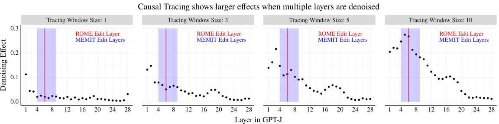
Figure 10: Tracing effects grow larger as the number of adjacent restored layer representations increases (tracing window size).
图 10：随着恢复的相邻层表示数量（追踪窗口大小）增加，追踪效应也随之增大。
Table 3: $R^{2}$ values for predicting rewrite score from choice of edit layer and tracing effect, across editing problem variants (corresponds to data in Fig. 6). Diff shows the added effect of including tracing in the regression (Both vs. Layer Only), in terms of $R^{2}$, and $p$-value shows the results from an F-test comparing the Both and Layer Only models. Tracing has some predictive value for Fact Forcing, but the $R^{2}$ value remains small compared to the choice of edit layer.
表 3：在各类编辑问题变体中，根据编辑层的选择和追踪效应预测重写得分的 $R^{2}$ 值（对应图 6 中的数据）。差值以 $R^{2}$ 衡量在回归中纳入追踪效应所带来的额外效应（两者与仅层相比），$p$ 值则展示了比较同时纳入两者的模型与仅纳入层的模型的 F 检验结果。追踪效应对事实强制具有一定的预测价值，但与编辑层的选择相比，其 $R^{2}$ 值仍然较小。
| Rewrite Score Table 重写得分表 | $R^{2}$ Values $R^{2}$ 值 | |||||
| Editing Problem 编辑问题 | Method 方法 | Layer 层 | Trace 追踪 | Both 两者 | Diff 差值 | $p$-value $p$ 值 |
| Error Injection 错误注入 | FT (1 layer) FT (1 层) | 0.756 | 0.062 | 0.758 | 0.002 | $<$1e-4 |
| FT (5 layers) FT (5 层) | 0.775 | 0.055 | 0.777 | 0.002 | $<$1e-4 | |
| ROME (1 layer) ROME (1 层) | 0.947 | 0.016 | 0.948 | 0.001 | $<$1e-4 | |
| MEMIT (5 layers) MEMIT (5 层) | 0.677 | 0.024 | 0.678 | 0.001 | 0.199 | |
| Tracing Reversal 追踪逆转 | FT (1 layer) FT (1 层) | 0.067 | 0 | 0.067 | 0 | 0.997 |
| FT (5 layers) FT (5 层) | 0.751 | 0.045 | 0.752 | 0.001 | 0.032 | |
| ROME (1 layer) ROME (1 层) | 0.294 | 0.017 | 0.31 | 0.015 | $<$1e-4 | |
| MEMIT (5 layers) MEMIT (5 层) | 0.212 | 0.036 | 0.218 | 0.006 | $<$1e-4 | |
| Fact Erasure 事实擦除 | FT (1 layer) FT (1 层) | 0.643 | 0.028 | 0.646 | 0.003 | $<$1e-4 |
| FT (5 layers) FT (5 层) | 0.698 | 0.025 | 0.70 | 0.002 | $<$1e-4 | |
| ROME (1 layer) ROME (1 层) | 0.857 | 0.019 | 0.858 | 0 | 0.555 | |
| MEMIT (5 layers) MEMIT (5 层) | 0.925 | 0.019 | 0.925 | 0 | 0.669 | |
| Fact Amplification 事实增强 | FT (1 layer) FT (1 层) | 0.383 | 0.014 | 0.393 | 0.01 | $<$1e-4 |
| FT (5 layers) FT (5 层) | 0.424 | 0.01 | 0.436 | 0.011 | $<$1e-4 | |
| ROME (1 layer) ROME (1 层) | 0.88 | 0.02 | 0.88 | 0 | 0.654 | |
| MEMIT (5 layers) MEMIT (5 层) | 0.905 | 0.018 | 0.906 | 0.001 | $<$1e-4 | |
| Fact Forcing 事实强制 | FT (1 layer) FT (1 层) | 0.697 | 0.104 | 0.724 | 0.027 | $<$1e-4 |
| FT (5 layers) FT (5 层) | 0.634 | 0.10 | 0.666 | 0.032 | $<$1e-4 | |
| ROME (1 layer) ROME (1 层) | 0.422 | 0.004 | 0.425 | 0.003 | $<$1e-4 | |
| MEMIT (5 layers) MEMIT (5 层) | 0.345 | 0.041 | 0.354 | 0.009 | $<$1e-4 |
Table 4: $R^{2}$ values for predicting paraphrase score from choice of edit layer and tracing effect, across editing problem variants. Diff shows the added effect of including tracing in the regression (Both vs. Layer Only), in terms of $R^{2}$, and $p$-value shows the results from an F-test comparing the Both and Layer Only models. The added effect of including tracing effects is very small across conditions (less than 3%).
表 4：在不同编辑问题变体中，根据编辑层的选择和追踪效应预测改述得分的 $R^{2}$ 值。差值以 $R^{2}$ 衡量在回归中纳入追踪所带来的额外效应（两者与仅层相比），$p$ 值则给出比较同时纳入两者的模型与仅纳入层的模型的 F 检验结果。在所有条件下，纳入追踪效应所带来的额外效应都非常小（低于 3%）。
| Paraphrase Score Table 改述得分表 | $R^{2}$ Values $R^{2}$ 值 | |||||
| Editing Problem 编辑问题 | Method 方法 | Layer 层 | Trace 追踪 | Both 两者 | Diff 差值 | $p$-value $p$ 值 |
| Error Injection 错误注入 | FT (1 layer) FT (1 层) | 0.061 | 0.005 | 0.063 | 0.002 | 0.258 |
| FT (5 layers) FT (5 层) | 0.036 | 0.003 | 0.038 | 0.001 | 0.582 | |
| ROME (1 layer) ROME (1 层) | 0.279 | 0.001 | 0.303 | 0.024 | $<$1e-4 | |
| MEMIT (5 layers) MEMIT (5 层) | 0.246 | 0 | 0.269 | 0.023 | $<$1e-4 | |
| Tracing Reversal 追踪反转 | FT (1 layer) FT (1 层) | 0.004 | 0.001 | 0.004 | 0 | 0.989 |
| FT (5 layers) FT (5 层) | 0.001 | 0 | 0.002 | 0.001 | 0.841 | |
| ROME (1 layer) ROME (1 层) | 0.01 | 0 | 0.012 | 0.002 | 0.121 | |
| MEMIT (5 layers) MEMIT (5 层) | 0.001 | 0 | 0.001 | 0 | 0.997 | |
| Fact Erasure 事实擦除 | FT (1 layer) FT (1 层) | 0.046 | 0.001 | 0.048 | 0.002 | 0.303 |
| FT (5 layers) FT (5 层) | 0.079 | 0.007 | 0.084 | 0.005 | 0.004 | |
| ROME (1 layer) ROME (1 层) | 0.537 | 0.012 | 0.539 | 0.001 | 0.218 | |
| MEMIT (5 layers) MEMIT (5 层) | 0.586 | 0.015 | 0.587 | 0.001 | 0.184 | |
| Fact Amplification 事实增强 | FT (1 layer) FT (1 层) | 0.005 | 0.012 | 0.022 | 0.017 | $<$1e-4 |
| FT (5 layers) FT (5 层) | 0.017 | 0.013 | 0.035 | 0.018 | $<$1e-4 | |
| ROME (1 layer) ROME (1 层) | 0.24 | 0.002 | 0.267 | 0.027 | $<$1e-4 | |
| MEMIT (5 layers) MEMIT (5 层) | 0.236 | 0.001 | 0.263 | 0.026 | $<$1e-4 | |
| Fact Forcing 事实强制 | FT (1 layer) FT (1 层) | 0.044 | 0.004 | 0.046 | 0.002 | 0.367 |
| FT (5 layers) FT (5 层) | 0.023 | 0.002 | 0.025 | 0.002 | 0.387 | |
| ROME (1 layer) ROME (1 层) | 0.357 | 0.01 | 0.36 | 0.003 | 0.003 | |
| MEMIT (5 layers) MEMIT (5 层) | 0.095 | 0.001 | 0.105 | 0.01 | $<$1e-4 |
Table 5: $R^{2}$ values for predicting neighborhood score from choice of edit layer and tracing effect, across editing problem variants. Diff shows the added effect of including tracing in the regression (Both vs. Layer Only), in terms of $R^{2}$, and $p$-value shows the results from an F-test comparing the Both and Layer Only models. The added effect of including tracing effects is very small across conditions (2% or less).
表 5：在不同编辑问题变体中，根据编辑层的选择和追踪效应预测邻域得分的 $R^{2}$ 值。差值以 $R^{2}$ 衡量在回归中纳入追踪所带来的额外效应（两者与仅层相比），$p$ 值则给出比较同时纳入两者的模型与仅纳入层的模型的 F 检验结果。在所有条件下，纳入追踪效应所带来的额外效应都非常小（不超过 2%）。
| Neighborhood Score Table 邻域得分表 | $R^{2}$ Values $R^{2}$ 值 | |||||
| Editing Problem 编辑问题 | Method 方法 | Layer 层 | Trace 追踪 | Both 两者 | Diff 差值 | $p$-value $p$ 值 |
| Error Injection 错误注入 | FT (1 layer) FT (1 层) | 0.005 | 0 | 0.008 | 0.002 | 0.197 |
| FT (5 layers) FT (5 层) | 0.014 | 0.001 | 0.015 | 0.001 | 0.55 | |
| ROME (1 layer) ROME (1 层) | 0.011 | 0.003 | 0.015 | 0.005 | 0.001 | |
| MEMIT (5 layers) MEMIT (5 层) | 0.004 | 0.001 | 0.006 | 0.002 | 0.154 | |
| Tracing Reversal 追踪反转 | FT (1 layer) FT (1 层) | 0.001 | 0 | 0.001 | 0 | 1 |
| FT (5 layers) FT (5 层) | 0.001 | 0 | 0.002 | 0.001 | 0.946 | |
| ROME (1 layer) ROME (1 层) | 0.001 | 0 | 0.002 | 0.001 | 0.946 | |
| MEMIT (5 layers) MEMIT (5 层) | 0.001 | 0 | 0.002 | 0 | 0.981 | |
| Fact Erasure 事实擦除 | FT (1 layer) FT (1 层) | 0.01 | 0 | 0.014 | 0.004 | 0.037 |
| FT (5 layers) FT (5 层) | 0.01 | 0 | 0.013 | 0.004 | 0.06 | |
| ROME (1 layer) ROME (1 层) | 0.04 | 0.005 | 0.046 | 0.006 | 0.001 | |
| MEMIT (5 layers) MEMIT (5 层) | 0.05 | 0.007 | 0.059 | 0.009 | $<$1e-4 | |
| Fact Amplification 事实增强 | FT (1 layer) FT (1 层) | 0.012 | 0.009 | 0.02 | 0.008 | $<$1e-4 |
| FT (5 layers) FT (5 层) | 0.016 | 0.008 | 0.025 | 0.009 | $<$1e-4 | |
| ROME (1 layer) ROME (1 层) | 0.04 | 0.01 | 0.05 | 0.01 | $<$1e-4 | |
| MEMIT (5 layers) MEMIT (5 层) | 0.035 | 0.008 | 0.044 | 0.01 | $<$1e-4 | |
| Fact Forcing 事实强制 | FT (1 layer) FT (1 层) | 0.054 | 0 | 0.057 | 0.003 | 0.03 |
| FT (5 layers) FT (5 层) | 0.019 | 0.001 | 0.022 | 0.004 | 0.011 | |
| ROME (1 layer) ROME (1 层) | 0.299 | 0.022 | 0.311 | 0.012 | $<$1e-4 | |
| MEMIT (5 layers) MEMIT (5 层) | 0.046 | 0.012 | 0.066 | 0.02 | $<$1e-4 |
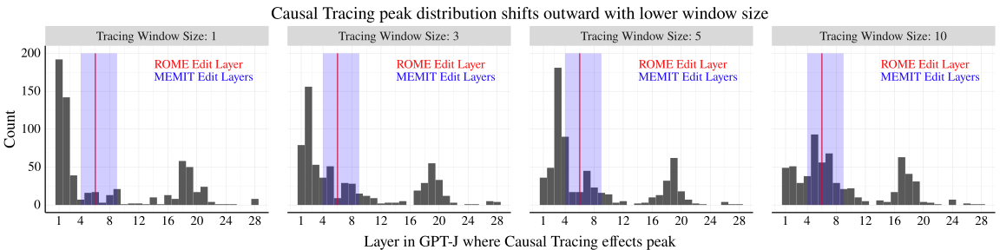
Figure 11: Each individual plot shows the distribution of tracing curve peaks (the argmax layer) across datapoints, using a different tracing window size. Together, the plots show how the distribution of layers where the tracing curves peak for each point shifts outward toward the first and last layer of the model as the tracing window size declines. This is primarily due to a clipping effect from using a window size greater than 1. The way tracing values are computed, a window size of 10 implies that the effect for “layer 1” is from restoring layers 1-5, while the effect for layer “layer 5” is 1-10. As a result, a tracing window size of 10 favors layer 5 over layers 1-4, and reducing the tracing window size leads to these clumps of effects shifting from layer 5 toward layer 1 (and from layer 24 to layer 28)
图 11：各子图分别采用不同的追踪窗口大小，展示各数据点的追踪曲线峰值所在层（取得最大值的层）的分布。这些图共同展示了随着追踪窗口大小减小，各数据点的追踪曲线峰值所在层的分布如何向外偏移，趋向模型的首层和末层。这主要是由使用大于 1 的窗口大小所产生的截断效应造成的。按照追踪值的计算方式，窗口大小为 10 意味着“第 1 层”的效应来自恢复第 1–5 层，而“第 5 层”的效应则来自恢复第 1–10 层。因此，大小为 10 的追踪窗口使第 5 层比第 1–4 层更占优势，而减小追踪窗口大小会使这些聚集的效应从第 5 层向第 1 层偏移（以及从第 24 层向第 28 层偏移）。
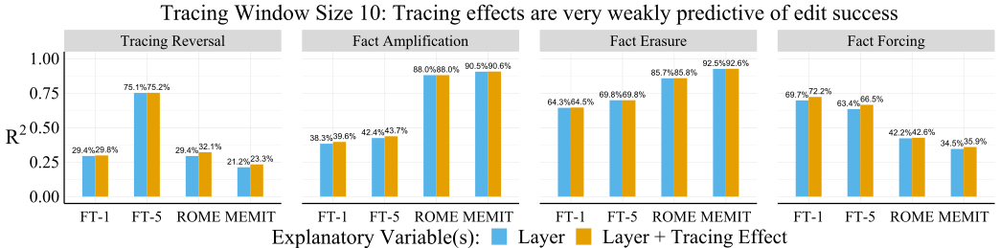
Figure 12: The results of our $R^{2}$ analysis for predicting rewrite score are nearly identical between using a tracing window size of 5 (shown in Fig. 6) or 10 (shown here).
图 12：在预测重写得分的 $R^{2}$ 分析中，使用大小为 5 的追踪窗口（见图 6）与使用大小为 10 的追踪窗口（见本图）所得的结果几乎相同。
Table 6: $R^{2}$ values for predicting overall score (raw average of rewrite, paraphrase, and neighborhood scores) from choice of edit layer and tracing effect, across editing problem variants. Diff shows the added effect of including tracing in the regression (Both vs. Layer Only), in terms of $R^{2}$, and $p$-value shows the results from an F-test comparing the Both and Layer Only models. The added effect of including tracing effects is very small across conditions (2% or less).
表 6：在不同编辑问题变体中，根据编辑层的选择和追踪效应预测总体得分（重写得分、改述得分和邻域得分的原始平均值）的 $R^{2}$ 值。差值以 $R^{2}$ 衡量在回归中纳入追踪所带来的额外效应（两者与仅层相比），$p$ 值则给出比较同时纳入两者的模型与仅纳入层的模型的 F 检验结果。在所有条件下，纳入追踪效应所带来的额外效应都非常小（不超过 2%）。
| Ovr. Edit Score 总体编辑得分 | $R^{2}$ Values $R^{2}$ 值 | |||||
| Editing Problem 编辑问题 | Method 方法 | Layer 层 | Trace 追踪 | Both 两者 | Diff 差值 | $p$-value $p$ 值 |
| Error Injection 错误注入 | FT (1 layer) FT (1 层) | 0.642 | 0.054 | 0.643 | 0.002 | 0.001 |
| FT (5 layers) FT (5 层) | 0.663 | 0.047 | 0.665 | 0.002 | 0.001 | |
| ROME (1 layer) ROME (1 层) | 0.62 | 0.003 | 0.629 | 0.009 | $<$1e-4 | |
| MEMIT (5 layers) MEMIT (5 层) | 0.525 | 0.008 | 0.534 | 0.009 | $<$1e-4 | |
| Tracing Reversal 追踪反转 | FT (1 layer) FT (1 层) | 0.294 | 0.025 | 0.296 | 0.002 | 0.054 |
| FT (5 layers) FT (5 层) | 0.751 | 0.045 | 0.752 | 0.001 | 0.032 | |
| ROME (1 layer) ROME (1 层) | 0.296 | 0.016 | 0.31 | 0.014 | $<$1e-4 | |
| MEMIT (5 layers) MEMIT (5 层) | 0.21 | 0.036 | 0.216 | 0.006 | $<$1e-4 | |
| Fact Erasure 事实擦除 | FT (1 layer) FT (1 层) | 0.28 | 0.007 | 0.283 | 0.004 | 0.008 |
| FT (5 layers) FT (5 层) | 0.119 | 0 | 0.124 | 0.004 | 0.015 | |
| ROME (1 layer) ROME (1 层) | 0.718 | 0.023 | 0.718 | 0 | 0.729 | |
| MEMIT (5 layers) MEMIT (5 层) | 0.794 | 0.025 | 0.794 | 0 | 0.555 | |
| Fact Amplification 事实增强 | FT (1 layer) FT (1 层) | 0.188 | 0.003 | 0.199 | 0.011 | $<$1e-4 |
| FT (5 layers) FT (5 层) | 0.224 | 0.002 | 0.236 | 0.013 | $<$1e-4 | |
| ROME (1 layer) ROME (1 层) | 0.583 | 0.005 | 0.59 | 0.007 | $<$1e-4 | |
| MEMIT (5 layers) MEMIT (5 层) | 0.597 | 0.005 | 0.607 | 0.01 | $<$1e-4 | |
| Fact Forcing 事实强制 | FT (1 layer) FT (1 层) | 0.487 | 0.056 | 0.5 | 0.013 | $<$1e-4 |
| FT (5 layers) FT (5 层) | 0.459 | 0.057 | 0.475 | 0.017 | $<$1e-4 | |
| ROME (1 layer) ROME (1 层) | 0.285 | 0.004 | 0.291 | 0.006 | $<$1e-4 | |
| MEMIT (5 layers) MEMIT (5 层) | 0.226 | 0.017 | 0.227 | 0.001 | 0.419 |
Appendix C Robustness Experiments附录 C 稳健性实验
In addition to our main results with ROME for GPT-J and our Rewrite Score metric, we include robustness experiments to confirm that results are similar for (1) other measures of edit success including Paraphrase Score, Neighborhood Score, and Overall Score (Tables 4, 5, and 6), (2) different values of the tracing window size (Fig. 12), (3) GPT2-XL rather than GPT-J (Fig. 13), (4) the original unscaled metrics from Meng et al. [2022a] (Fig. 14), and (5) using the tracing effect at the last subject token rather than the max across tokens (Fig. 16). We consider the last subject token effect since this corresponds more directly to the motivation for ROME (see Meng et al. [2022a]). We expand on each of these experiments below:
除使用 ROME 编辑 GPT-J 并采用重写得分指标得到的主要结果外，我们还进行了稳健性实验，以确认在以下情况下也能得到相似的结果：(1) 使用其他编辑成功度量，包括改述得分、邻域得分和总体得分（表 4、5 和 6）；(2) 使用不同的追踪窗口大小（图 12）；(3) 使用 GPT2-XL 替代 GPT-J（图 13）；(4) 使用 Meng et al. [2022a] 中原始的未经缩放的指标（图 14）；以及 (5) 使用主语最后一个词元处的追踪效应，而非所有词元上的最大追踪效应（图 16）。我们考虑主语最后一个词元处的效应，是因为这与 ROME 的设计动机更直接地对应（见 Meng et al. [2022a]）。下面将详细介绍这些实验：
Results for Paraphrase, Neighborhood, Overall Metrics. We recreate our regression-based analysis across editing problem variants and editing methods using paraphrase score and neighborhood score as our outcomes rather than Rewrite Score, as well as an Overall Score that is the raw average of the three edit scores. These results are shown in Tables 4, 5, and 6 respectively. Similar to our analysis with rewrite score, these tables show that tracing effects are barely predictive of edit success at all. For paraphrase score, the largest gains in $R^{2}$ values are around 0.03 (relative to the layer-only regression model), and for neighborhood score, the largest gain is 0.02. The largest gain for overall score is 0.02 for Fact Forcing with constrained finetuning. Our overall conclusion remains that tracing effects are almost totally unrelated to edit success across editing problem variants, including for different edit success metrics.
改述、邻域和总体指标的结果。我们在不同编辑问题变体和编辑方法上重新进行了基于回归的分析，使用改述得分和邻域得分代替重写得分作为结果变量，并使用了一个总体得分，即三个编辑得分的直接平均值。这些结果分别见表 4、5 和 6。与使用重写得分的分析类似，这些表格表明，追踪效应几乎完全无法预测编辑是否成功。对于改述得分，$R^{2}$ 值的最大增幅约为 0.03（相对于仅使用层的回归模型）；对于邻域得分，最大增幅为 0.02。总体得分的最大增幅为 0.02，出现在采用约束微调的事实强制问题中。我们的总体结论仍然是，在不同编辑问题变体中，追踪效应与编辑成功几乎完全无关，即便采用不同的编辑成功指标也是如此。
Results for Different Tracing Window Sizes. We repeat our analysis from Sec. 5 using tracing effects obtained from a larger tracing window size of 10, to match the value used in Meng et al. [2022a]. Note that from Fig. 10, we know that the tracing effects grow larger as more adjacent layer representations are restored. When we recreate our main $R^{2}$ analysis using tracing effects with window size 10 (shown in Fig. 12), we find that results are nearly identical to those shown in Tables 3, 4, and 5.
不同追踪窗口大小的结果。我们使用更大的追踪窗口大小 10 所得到的追踪效应，重复了第 5 节的分析，以与 Meng et al. [2022a] 使用的值一致。注意，从图 10 可知，随着更多相邻层的表示被恢复，追踪效应会增大。当我们使用窗口大小为 10 的追踪效应重新进行主要的 $R^{2}$ 分析时（见图 12），发现结果与表 3、4 和 5 所示的结果几乎相同。
Results for GPT2-XL. We rerun our analysis with GPT2-XL, a 48 layer model Radford et al. [2019], while editing layers in the range {1, 5, 9, 13, 17, 18, 21, 25, 29, 33, 37, 41, 45, 48}. Here, we use a tracing window size of 10, and we limit our experiments to focus on Error Injection and Fact Forcing editing problems. As seen in Fig. 13, we find very similar trends when explaining rewrite score in terms of the choice of edit layer and the tracing effect at that layer. The largest explanatory effects in terms of $R^{2}$ are observed for Fact Forcing with constrained finetuning, but these effects remain small at about 2%.
GPT2-XL 的结果。我们使用 GPT2-XL 重新进行了分析，这是一个具有 48 层的模型 Radford et al. [2019]，并在 {1, 5, 9, 13, 17, 18, 21, 25, 29, 33, 37, 41, 45, 48} 范围内的层上进行编辑。这里，我们使用大小为 10 的追踪窗口，并将实验限定为错误注入和事实强制这两类编辑问题。如图 13 所示，当根据编辑层的选择及该层的追踪效应来解释重写得分时，我们发现了非常相似的趋势。以 $R^{2}$ 衡量，采用约束微调的事实强制问题呈现出最大的解释效应，但这些效应仍然很小，约为 2%。
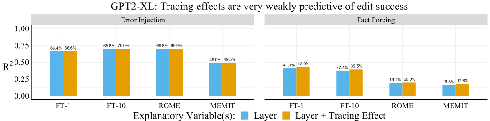
Figure 13: Like with GPT-J, tracing effects are very weakly predictive of edit success across editing problem variants for GPT2-XL while Fact Forcing shows the largest relationship. Relative to the $R^{2}$ of a model predicting rewrite score based on the choice of edit layer (blue), a model with edit layer and tracing effects (orange) improves the $R^{2}$ by at most .02 points for Fact Forcing. The choice of edit layer explains a much greater share of the variance in rewrite score.
图 13：与 GPT-J 的情况类似，在 GPT2-XL 的不同编辑问题变体中，追踪效应对编辑成功的预测能力非常弱，其中事实强制呈现出的关联最强。相对于根据编辑层的选择预测重写得分的模型（蓝色）的 $R^{2}$，同时使用编辑层和追踪效应的模型（橙色）在事实强制问题上使 $R^{2}$ 最多提高 .02。编辑层的选择能够解释重写得分中大得多的方差比例。
Results for Unscaled Metrics. We repeat our analysis using the original editing metrics and absolute tracing effects from Meng et al. [2022a]. Their rewrite magnitude is the absolute difference between the probability of the new target $o_{\textit{false}}$ and the old true target $o_{\textit{true}}$ after editing, $p_{\theta^{*}}(o_{\textit{false}}|s,r)-p_{\theta^{*}}(o_{\textit{true}}|s,r)$. The tracing effect is the absolute tracing effect, $p_{\theta}(o_{\textit{true}}|s_{\textit{noise}},r,v_{(t,\ell)})\\ -p_{\theta}(o_{\textit{true}}|s_{\textit{noise}},r)$, measured at the last subject token index. We adjusted our rewrite and tracing metrics to (1) rely only on the target output probability, rather than difference in probabilities of two different targets which might not be appropriate for our different editing problems, and (2) to always fall between 0 and 1 for better comparability between datapoints, since absolute tracing effect are bounded by the original model probabilities. However, we reach the same conclusions from our analysis when using the original editing metrics. We show an example for rewrite magnitude and the absolute tracing effect for Error Injection in Fig. 14. The correlation between edit success and tracing effect is still near zero.
未缩放指标的结果。我们使用 Meng et al. [2022a] 的原始编辑指标和绝对追踪效应重复了分析。他们的重写幅度是编辑后新目标 $o_{\textit{false}}$ 与原真实目标 $o_{\textit{true}}$ 的概率之差的绝对值，即 $p_{\theta^{*}}(o_{\textit{false}}|s,r)-p_{\theta^{*}}(o_{\textit{true}}|s,r)$。追踪效应为绝对追踪效应，即 $p_{\theta}(o_{\textit{true}}|s_{\textit{noise}},r,v_{(t,\ell)})\\ -p_{\theta}(o_{\textit{true}}|s_{\textit{noise}},r)$，在主语的最后一个词元索引处测量。我们对重写和追踪指标进行了调整，使其（1）仅依赖目标输出概率，而不依赖两个不同目标的概率之差，因为后者可能不适用于我们所研究的不同编辑问题；（2）始终落在 0 和 1 之间，以提高数据点之间的可比性，因为绝对追踪效应受到原始模型概率的限制。然而，使用原始编辑指标进行分析时，我们得到了相同的结论。图 14 展示了错误注入问题中重写幅度与绝对追踪效应的一个示例。编辑成功与追踪效应之间的相关性仍然接近零。
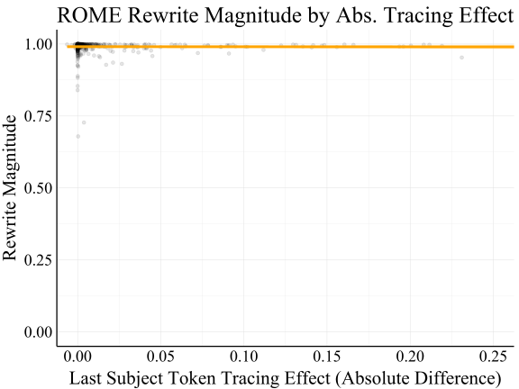
Figure 14: Editing vs. tracing results for ROME at layer 6 for Error Injection, using the un-rescaled rewrite and tracing metrics from Meng et al. [2022a]. Here, rewrite magnitude is the difference between the probability of the new target $o_{\textit{false}}$ and the old true target $o_{\textit{true}}$ after editing, $p_{\theta^{*}}(o_{\textit{false}}|s,r)-p_{\theta^{*}}(o_{\textit{true}}|s,r)$. The tracing effect is the absolute tracing effect, $p_{\theta}(o_{\textit{true}}|s_{\textit{noise}},r,v_{(t,\ell)})-p_{\theta}(o_{\textit{true}}|s_{\textit{noise}},r)$, measured at the last subject token index. The correlation here is near zero, at $\rho=-.006$.
图 14：使用 Meng et al. [2022a] 中未经重新缩放的重写和追踪指标，在第 6 层采用 ROME 处理错误注入问题时的编辑与追踪结果对比。这里，重写幅度是编辑后新目标 $o_{\textit{false}}$ 与原真实目标 $o_{\textit{true}}$ 的概率之差，即 $p_{\theta^{*}}(o_{\textit{false}}|s,r)-p_{\theta^{*}}(o_{\textit{true}}|s,r)$。追踪效应为绝对追踪效应，即 $p_{\theta}(o_{\textit{true}}|s_{\textit{noise}},r,v_{(t,\ell)})-p_{\theta}(o_{\textit{true}}|s_{\textit{noise}},r)$，在主语的最后一个词元索引处测量。这里的相关性接近零，为 $\rho=-.006$。
Results for Last Subject Token Effect. ROME increases the target probability $p(o_{\textit{false}}|s,r)$ by optimizing for a new output representation from a chosen MLP layer at the last subject token index. Meng et al. [2022a] show that this choice of token representation is critical to the success of the editing method, which is a hypothesis directly motivated by the results from their Causal Tracing analysis. In our paper, we by default report results using tracing effects that are the max across tokens at a given layer, for better comparability across the editing methods we use. However, when we repeat our analysis using the tracing effect specifically at the last subject token index, we obtain the same negative conclusions about the relationship between Causal Tracing localization and ROME editing performance. We show the correlations between Rewrite Score and Last Subject Token Tracing Effect in Fig. 16, where we see there are no positive correlations between editing success and tracing results at any layer in GPT-J.
最后一个主语词元效应的结果。ROME 通过优化所选 MLP 层在最后一个主语词元索引处的新输出表示，提高目标概率 $p(o_{\textit{false}}|s,r)$。Meng et al. [2022a] 表明，这一词元表示的选择对编辑方法的成功至关重要，这一假设直接源于其因果追踪分析的结果。在本文中，为了更好地比较所使用的不同编辑方法，我们默认使用给定层中所有词元上的最大追踪效应来报告结果。然而，当我们使用最后一个主语词元索引处的追踪效应重复分析时，对于因果追踪定位与 ROME 编辑性能之间的关系，我们得到了相同的否定性结论。我们在图 16 中展示了重写得分与最后一个主语词元追踪效应之间的相关性，可以看到，在 GPT-J 的任何一层，编辑成功程度与追踪结果之间均不存在正相关。

Figure 15: The relationship between ROME edit success and the tracing effect is near zero at most edit layers in the model (for the standard Error Injection editing problem). Red lines show perfect relationships between tracing effect and edit success.
图 15：在模型的大多数编辑层中，ROME 编辑成功程度与追踪效应之间的相关性接近于零（针对标准的错误注入编辑问题）。红线表示追踪效应与编辑成功程度之间的完全相关关系。

Figure 16: The relationship between ROME edit success and the tracing effect at the last subject token. The ROME method edits a fact by changing the output representation for the MLP layer specifically at the token index corresponding to the last subject token. However, editing performance and tracing effect at this position still do not positively correlate. Note the distribution of points along the $x$ axis changes depending on the choice of edit layer since the distribution of tracing effects is calculated from tracing effects at that layer.
图 16：ROME 编辑成功程度与最后一个主语词元处的追踪效应之间的关系。ROME 方法通过改变 MLP 层在最后一个主语词元所对应的词元索引处的输出表示来编辑事实。然而，编辑性能与该位置的追踪效应仍然不呈正相关。请注意，由于追踪效应的分布是根据该层的追踪效应计算得到的，因此沿 $x$ 轴的点分布会随所选编辑层而变化。

Figure 17: The relationship between Fact Forcing edit success and the tracing effect for constrained finetuning of 5 adjacent layers. “Layer $\ell$” indicates the center of this 5-layer interval, and the dashed red lines show a hypothetical perfect relationship between tracing effect and edit success. For many layers, there is a noticeable positive relationship between tracing effects and editing success. Yet, (1) there is a high amount of variance in the outcome, and (2) this variance is largely explained by the edit layer. As a result, tracing effects provide little extra information for predicting edit success beyond the choice of edit layer (about 3% more explained variance; see Fig. 6).
图 17：对 5 个相邻层进行受约束微调时，事实强制编辑的成功程度与追踪效应之间的关系。“层 $\ell$”表示这一 5 层区间的中心，红色虚线表示追踪效应与编辑成功程度之间假设的完全相关关系。对于许多层，追踪效应与编辑成功程度之间存在明显的正相关关系。然而，(1) 结果存在较大的方差，且 (2) 这一方差在很大程度上可由编辑层解释。因此，除编辑层的选择之外，追踪效应几乎无法为预测编辑成功程度提供额外信息（解释的方差约增加 3%；见图 6）。

Figure 18: The relationship between ROME overall score (average of rewrite/paraphrase/neighborhood scores) and the tracing effect is somewhat negative for most edit layers in the model (for the standard Error Injection editing problem). Red lines show a perfect relationship between tracing effect and edit success, so a negative relationship suggests that tracing localization results do not indicate that editing will be successful.
图 18：在模型的大多数编辑层中，ROME 总体得分（重写得分、释义得分和邻域得分的平均值）与追踪效应之间呈一定程度的负相关（针对标准的错误注入编辑问题）。红线表示追踪效应与编辑成功程度之间的完全相关关系，因此，负相关关系表明，追踪定位结果并不能指示编辑是否会成功。
Table 7: Additional regression error metrics (for CounterFact and ROME) lead us to the same conclusion as our analysis based on $R^{2}$. RMSE is root mean squared error, and MAE is mean absolute error. Regressions predicting rewrite score (or overall score) from the choice of edit layer achieve much lower prediction errors than regressions using the tracing effect, suggesting that the choice of edit layer is much more important for edit success than the tracing effect.
表 7：其他回归误差指标（针对 CounterFact 和 ROME）使我们得出了与基于 $R^{2}$ 的分析相同的结论。RMSE 为均方根误差，MAE 为平均绝对误差。根据所选编辑层预测重写得分（或总体得分）的回归模型，其预测误差远低于使用追踪效应的回归模型，这表明编辑层的选择对于编辑成功的重要性远高于追踪效应。
| Edit Metric 编辑指标 | Regression Metric 回归指标 | Predictor(s) 预测变量 | Value 数值 |
| Rewrite Score 重写得分 | $R^{2}$ | Layer 层 | 0.947 |
| Tracing Effect 追踪效应 | 0.016 | ||
| RMSE | Layer 层 | 0.073 | |
| Tracing Effect 追踪效应 | 0.315 | ||
| MAE | Layer 层 | 0.02 | |
| Tracing Effect 追踪效应 | 0.206 | ||
| Overall Score 总体得分 | $R^{2}$ | Layer 层 | 0.618 |
| Tracing Effect 追踪效应 | 0.003 | ||
| RMSE | Layer 层 | 0.133 | |
| Tracing Effect 追踪效应 | 0.216 | ||
| MAE | Layer 层 | 0.11 | |
| Tracing Effect 追踪效应 | 0.183 |
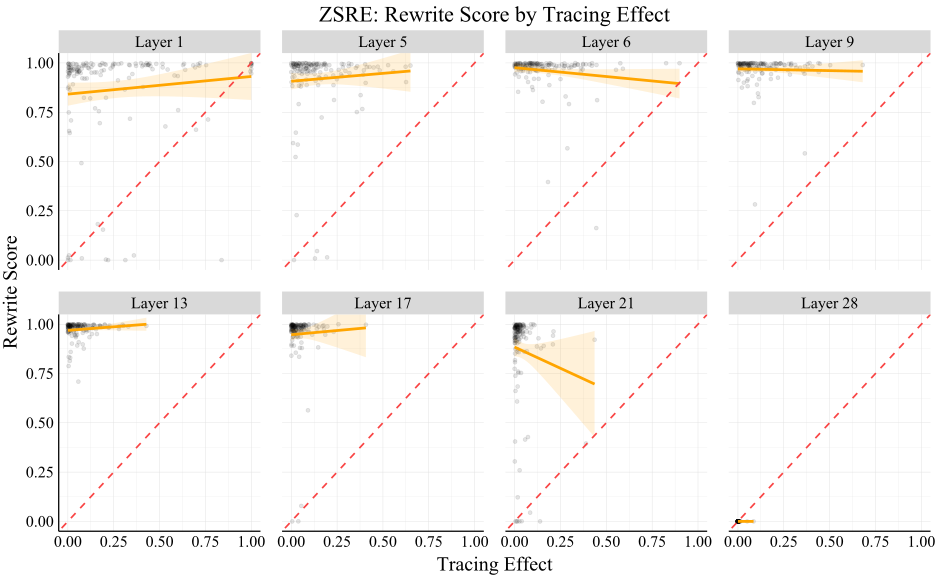
Figure 19: Additional experiments on the ZSRE dataset show the same results as for CounterFact, using the ROME editing method with rewrite score as our editing success metric (see regression analysis results in Table 8). Red lines show a perfect relationship between tracing effect and edit success, so near-zero relationships suggest that tracing localization results do not indicate that editing will be successful.
图 19：在 ZSRE 数据集上使用 ROME 编辑方法，并以重写得分作为编辑成功指标的补充实验，得到了与 CounterFact 相同的结果（回归分析结果见表 8）。红线表示追踪效应与编辑成功程度之间的完全相关关系，因此，接近于零的相关关系表明，追踪定位结果并不能指示编辑是否会成功。
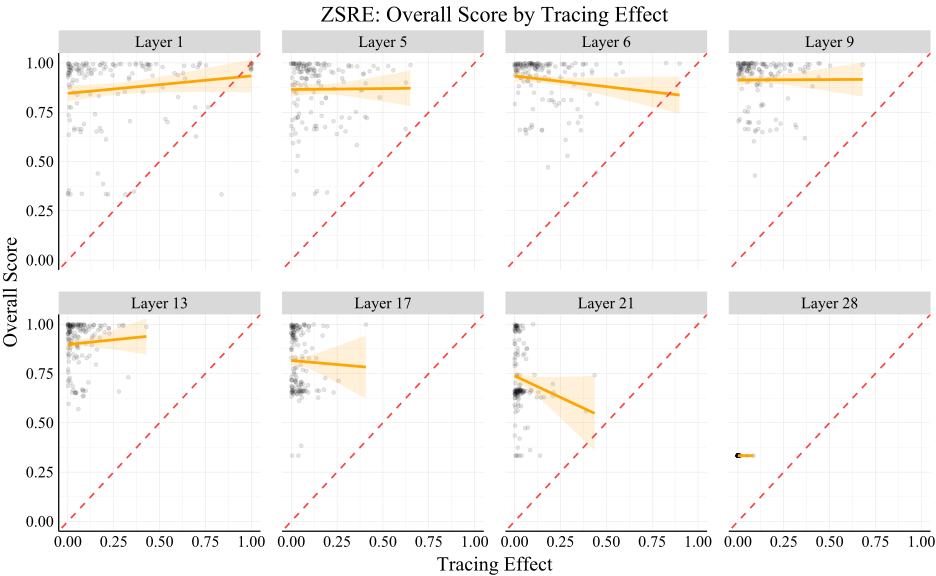
Figure 20: ZSRE experiments using overall score (average of rewrite/paraphrase/neighborhood scores) as the edit success metric.
图 20：以总体得分（重写得分、释义得分和邻域得分的平均值）作为编辑成功指标的 ZSRE 实验。
Table 8: ZSRE regression results lead us to the same conclusion as our experiments on CounterFact, using ROME editing. RMSE is root mean squared error, and MAE is mean absolute error. Regressions predicting rewrite score (or overall score) from the choice of edit layer achieve much lower prediction errors than regressions using the tracing effect, suggesting that the choice of edit layer is much more important for edit success than the tracing effect.
表 8：使用 ROME 编辑时，ZSRE 的回归结果使我们得出了与 CounterFact 实验相同的结论。RMSE 为均方根误差，MAE 为平均绝对误差。根据所选编辑层预测重写得分（或总体得分）的回归模型，其预测误差远低于使用追踪效应的回归模型，这表明编辑层的选择对于编辑成功的重要性远高于追踪效应。
| Edit Metric 编辑指标 | Regression Metric 回归指标 | Predictor(s) 预测变量 | Value 数值 |
| Rewrite Score 重写得分 | $R^{2}$ | Layer 层 | 0.795 |
| Tracing Effect 追踪效应 | 0.042 | ||
| RMSE | Layer 层 | 0.158 | |
| Tracing Effect 追踪效应 | 0.341 | ||
| MAE | Layer 层 | 0.072 | |
| Tracing Effect 追踪效应 | 0.254 | ||
| Overall Score 总体得分 | $R^{2}$ | Layer 层 | 0.654 |
| Tracing Effect 追踪效应 | 0.059 | ||
| RMSE | Layer 层 | 0.136 | |
| Tracing Effect 追踪效应 | 0.223 | ||
| MAE | Layer 层 | 0.097 | |
| Tracing Effect 追踪效应 | 0.188 |
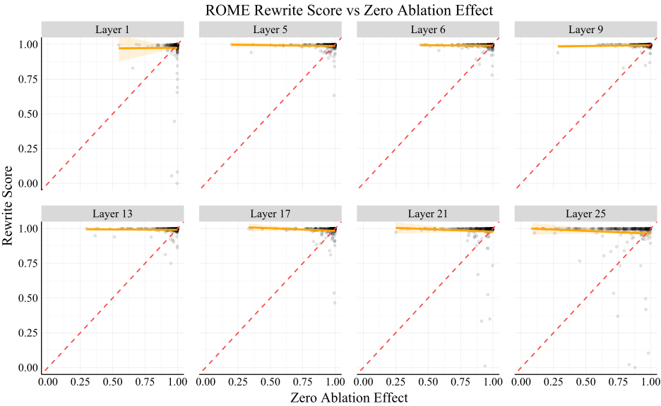
Figure 21: Additional experiments with representation zeroing as the localization method show the same results as for Causal Tracing, using the ROME editing method and rewrite score as the edit success metric. Red lines show a perfect relationship between representation zeroing and edit success, so near-zero relationships suggest that representation ablation localization results do not indicate that editing will be successful.
图 21：采用表征置零作为定位方法的补充实验得到了与采用 Causal Tracing 时相同的结果，其中使用 ROME 编辑方法，并以重写得分作为编辑成功的度量指标。红线表示表征置零与编辑成功之间的完全相关关系，因此，近乎为零的相关关系表明，表征消融的定位结果并不意味着编辑会成功。
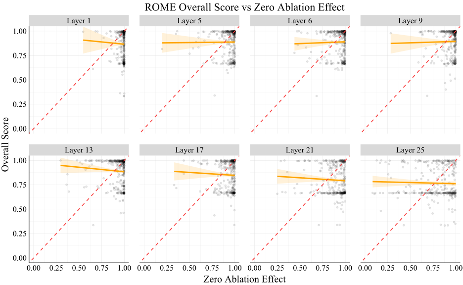
Figure 22: Additional experiments with representation zeroing as the localization method show the same results as for Causal Tracing, using the ROME editing method and overall score as the edit success metric. Red lines show a perfect relationship between representation zeroing and edit success, so near-zero relationships suggest that representation ablation localization results do not indicate that editing will be successful.
图 22：采用表征置零作为定位方法的补充实验得到了与采用 Causal Tracing 时相同的结果，其中使用 ROME 编辑方法，并以总体得分作为编辑成功的度量指标。红线表示表征置零与编辑成功之间的完全相关关系，因此，近乎为零的相关关系表明，表征消融的定位结果并不意味着编辑会成功。